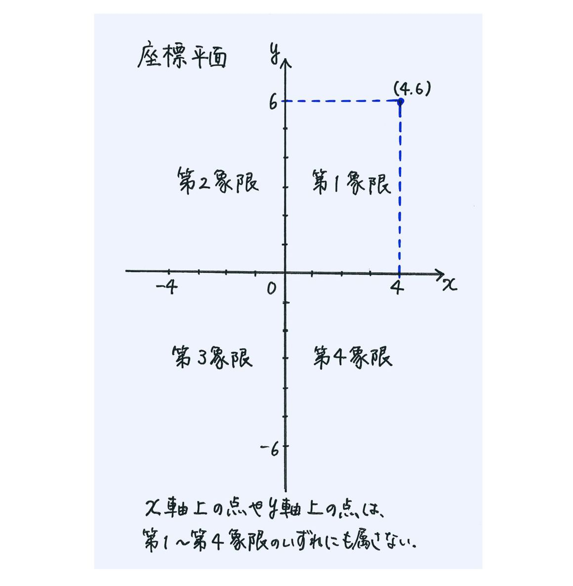
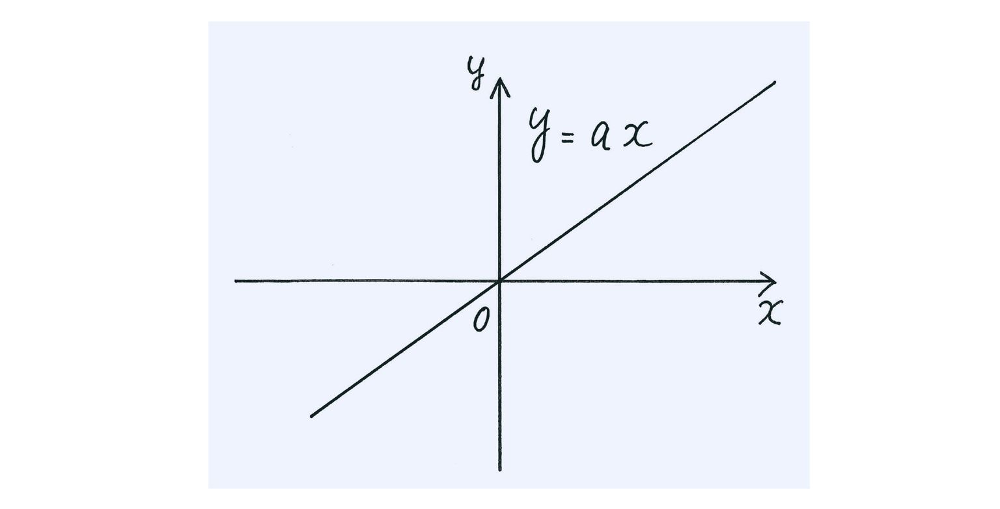
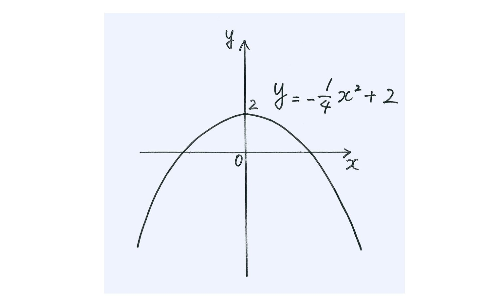
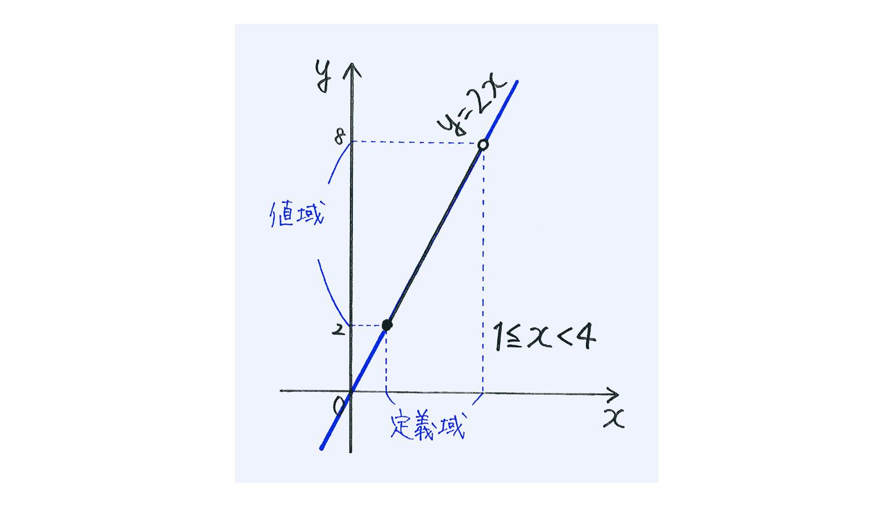
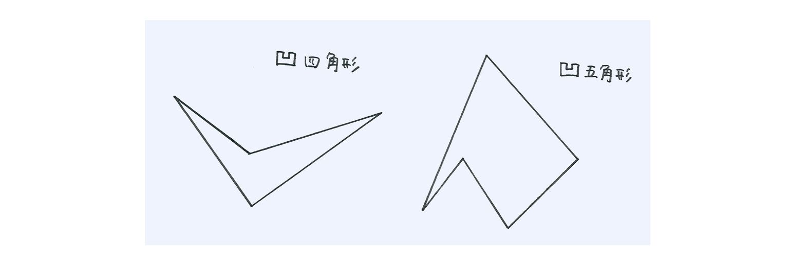
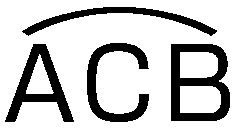
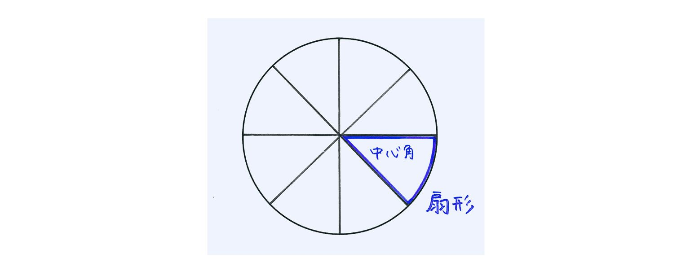
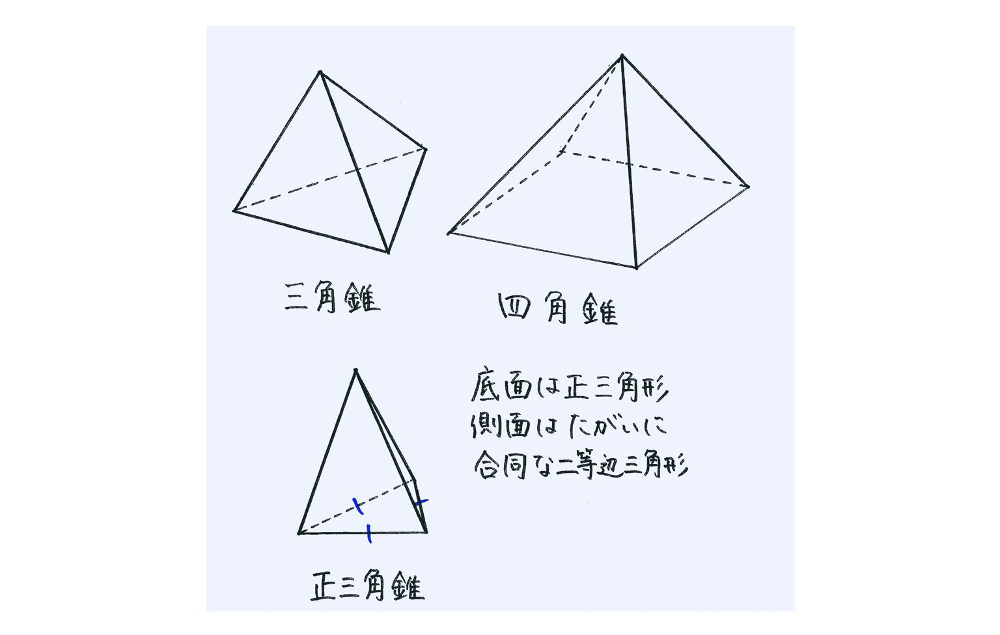
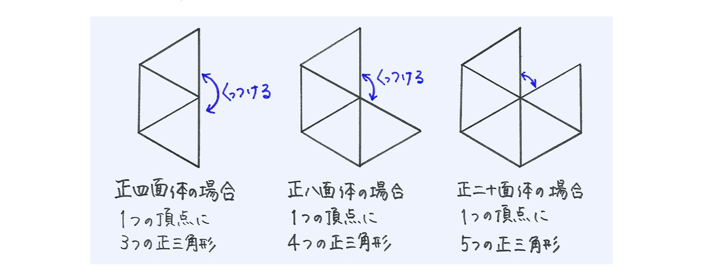

| おとなの楽習 (6) 数学のおさらい 図形 | |
| 土井 里香 | |
| (2016) | |
はじめに
外国の長編小説を読むとき、次々と長い名前の登場人物が出てきてわけがわからなくなったことはありませんか。このようなとき、私は登場人物の相関図をメモ書きしながら読み進めます。
これを、数学の本でもやってみてください。
おとなの私たちにとって、数学はテストを受けるためのものではありません。わからないところで立ち止まり続ける必要はないのです。わからない箇所はとりあえず書き出す程度にして、次に進みましょう。
はじける数学
「事態はようやく収束にむかった」
「たまにはストレス発散も大事だ」
私たちが日常、何気なく使っているフレーズですね。この「収束」「発散」という言葉、数学の世界では似て非なる使われ方がなされています。
たとえば、というようにある分数の分母がどんどん大きくなっていく場合、その分数の値はどんどん0に近づいていきます。このとき、「この数列は0に収束する」と表現されます。まあ、これはなんとなくわかりますね。
では、の場合はどうでしょうか。つまり、分子が分母の100倍に1をたしたものになっている場合です。このときは、「この数列は100に収束する」ということになります。収束するのにその結果が100だなんて、なんだかちょっと変だと感じられるかもしれませんね。
1、2、3、4......と数がどんどん大きくなっていく場合、その数の値はどこまでも無限に増えていきます。このとき、「この数列は発散する」と表現されます。
次に、1、－1、1、－1、1、－1......のようにプラスマイナスだけが交互に入れ替わっている場合、この数列はどうなっていると言えるでしょうか。このときも、実は「この数列は発散する」とみなされます。ある一定の幅で振動している感じですから、「発散」とはちょっと意外ですね。
ただただ問題を解くことで精一杯だった学生時代と違い、おとなになってから再び学ぶ数学には、こんな「あれっ？」がいっぱいちりばめられています。
証明問題は時代が求めている訓練
図形の分野では、角度や長さを求める問題が人気です。それに引き換え、証明問題はなにかと嫌われているようですね。
数学といえば答えがマルかバツかはっきりしているはずなのに、証明問題に限っては、せっかく解答してもそれが合っているのか違っているのかがわかりにくいからでしょうか。
また、数学のくせに覚えておくべきことがらが多いのも、図形の証明問題が嫌われる理由かもしれません。
でも、おとなになったいま、覚えていないからバツということはありません。忘れたくない大事な約束は、手帳にメモしておけばよいのです。使うことが多い内容なら自然に覚えてしまうでしょうし、逆に覚えられないものは、それだけ使用する機会が少ないということです。
学ぶことは、単に暗記の訓練をすることではありません。数学の証明問題を学ぶのは、蓄積された個々のデータに対して、どのようなリンクを作っていけばよいかを身につけることです。
いまの世の中、データや情報はどこにでもあふれています。それをがむしゃらに脳の中に取り込むのは不可能です。場合に応じて、いかにうまく必要な情報を集めてくるか。そして、いかにわかりやすく編集していくか。それこそが、いまの時代が必要としている訓練なのではないでしょうか。
無駄な情報をそぎ落とし、必要なデータを抽出し、仮定と結論をシンプルにつなげていく訓練。図形の問題を通して、ちょっと体験レッスンしてみましょう。
この章は、数学のビジュアル部門への入り口です。
ビジュアルな数学といえば、難解な図形クイズのようなものを思い浮かべる方が多いかもしれませんが、グラフに関する分野はそれ以上に奥深いものなのですよ。
中学校では、座標の考え方を身につけるために比例や一次関数をあつかいます。普通は、xが０のときはyも０であるという正比例と、xとyをかけ合わせたら常に一定の数になるという反比例から学びますが、この本ではいきなり一次関数です。そして、正比例は一次関数の特別な場合として紹介します。実際、おとなになった私たちは０からのスタートをしているわけではありませんから、その方が現実的なのです。
一次関数であつかうグラフは、科学で利用する実験や観察のグラフとはちょっと違います。折れ線グラフでも棒グラフでもない、範囲を指定しない限りどこまでも続く直線です。けれども、二つの数の関係をグラフに表すというのがどういうことかを把握するために、まずは点がならんだグラフをかいてみます。そうして、直線が点の集合体であることを再確認していきます。グラフが直線になったら、x軸とy軸の方向、そしてグラフの傾きの意味をしっかり頭の中にたたきこんでおいてください。
一次関数のグラフは直線だけですが、ここでは、反比例のグラフである双曲線や二次関数の放物線にも少しふれています。直線であれ曲線であれ、１本のラインは、必ず式とその範囲指定を組み合わせることによって表すことができるのです。
数式、方程式や不等式の意味を視覚的にとらえられるようになれば、次には平面にかき表せない世界を作り出せるようになります。式とグラフの関係を考えることは、三角形や円などの図形でもって図形を考えること以上にクリエイティブな思考だといえるでしょう。
関係をさぐってみれば...
「関数」は単元名として教科書の目次によく出てくる言葉ですが、かなり浮世離れした数学用語のうちの１つです。だいたい数学と聞いて連想するのは、たいてい計算や文章題、図形の証明などであって、関数を思い出す人は少ないのではないでしょうか。
それほど印象の薄い関数ですが、サイン・コサイン、指数・対数だのと高校で猛威を振るっていたのは、関数の１つだったのです。けっきょく、関数とは何だったのでしょう。
関数は、一言でいえば文字通り「数の関係」のことです。特に一次関数は、変化する２つの数の関係を、一次式を駆使して調べるものです。たいていはxとyのコンビが登場して、xが何か変化していけばyもその変化に反応するように、yなりに変化していきます。
一次関数では、yは「xを何倍かしたのち何らかの数をたすかひいたもの」として決まっていきます。x次第でyが決まるのです。具体的にxがどんな値かがわかれば、yの値は確定します。ただし、その関係によっては、２通り以上のxの値に対して、同じyの値が対応することもあります。
人が１人いればその人を産んだ母親は１人だけですが、母親からすれば、生涯に出産したのがその人だけの場合もあるし、きょうだいを何人か産む場合もありますね。そんなふうに、xとyの値が必ずしも１対１のペアになるとは限りませんが、xに対しては、それに対応するyとして決まるのは１つだけです。
ただそれだけのネタで、あとはグラフをかいたり式を求めたりというのが、中学校で習った関数でした。
座標で語る時空の旅
飛行機の搭乗券や新幹線の指定席チケットには、「42Ｅ」「７号車14番Ａ席」などと書かれています。コンサートのチケットでも、指定席だと「１階Ｄ列Ｒ21番」などと書かれています。
飛行機や新幹線の場合は、窓側から順にＡ、Ｂ、Ｃ......と記号がわり振られ、数字は前から何列目の座席であるかを表します。コンサート会場のチケットの場合は、たいてい前列から順にＡ、Ｂ、Ｃ......で、数字が横の並びの場所を表しています。大きなホールだと、左半分の座席をL１、L２、L３......、右半分をR１、R２、R３......としているところもあります。全方向に座席のある日本武道館の場合は、東西南北の八方の記号をつけて「２階南東Ｒ列18番」などとしているようですね。
関数でベースになっている座標の考え方は、この座席番号と似ています。たとえば点（4，6）の座標であれば、原点Ｏから右へ４すじ、上へ６すじ分上がった交差点です。京都や奈良、北海道の市街地に住んでいる方なら、東西と南北の道路で碁盤の目状になった街を思われることでしょう。規模は大きくなりますが、世界地図の緯度と経度もそうですね。
一次関数のグラフをかくときは、この座標の考え方に沿った座標平面を利用します。考え方自体はそうむずかしくないと思うのですが、中学校・高校の数学では、内容が進めば進むほど座標平面というものをバンバン使うようになるので、やたらと慎重にくどくどと授業が進められていくのかもしれません。
座標平面は、右向けの矢印（x軸）と上向けの矢印（y軸）が中央で交差しています。その交点が原点Ｏです。原点Ｏの座標は（0，0）で表されますが、「原点ゼロ」ではなく「原点オウ」と呼んでくださいね。原点を表す英語「origin」の頭文字です。円の中心がＯ（オウ）であるのと同じで、この点は世界の中心なのです。
そして、たとえば点（4，6）の場合は、４がxの値、６がyの値で、それぞれx座標、y座標と呼ばれています。
この座標平面の説明の中でちょっと混乱しやすいのは、第１象限～第４象限という言葉です。

気温の変化や月々の売り上げの変化など、ふつうのグラフをかくときの数値は、正の数の範囲です。そこで、xもyも正になるような右上の領域が第１象限となります。
時間の経過とともに何かの値が増えていくとき、「右肩上がり」といいますね。数直線で右に行けば行くほど数値が大きくなるように、座標平面でも右へ行けば行くほどxの値が大きくなります。逆に左へ行き、原点よりもさらに左に行けば、そこはxが負の数になる世界。過去にさかのぼっていくような領域です。それが第２象限です。こうして、第１象限からぐるりと左回りに第４象限まであるのです。
座標平面上のある点が、x軸やy軸と線対称に移動したらどうなるのか。原点と点対称ではどうか。その時、座標の符号はどう変化するのか。こんな問題が出てきても、座標平面の図をきちんと思い描けばそうむずかしいことではありませんよ。
点を線対称に移動したりして、いったい何の役に立つのかと思われるかもしれませんが、次元をもう少し増やして一歩踏み込めば、これはワープ理論につながります。
たとえば、x＝2009として、西暦2009年を表すとしましょう。これを、y軸を超えて線対称の点に移せば、そこは紀元前2009年の点です。実際には、私たちが生きている空間は三次元の世界で時間軸に沿って進んでいますから、（2009，0）の点から（－2009，0）の点までの変換ではなく、(2009，東経135°，北緯35°，海抜20ｍ)から（－2009，東経135°，北緯35°，海抜20ｍ）への移動ということになるのでしょう。
このような座標は理論上でしか表現できませんが、宇宙の形を想像したり時間旅行について考えたりするための基礎となる理論の元を、私たちは中学校の頃にそうとは知らないまま学んでいたわけですね。
ｙ＝ax＋b～式もグラフもこれが基本
一次関数は、常に次の形の式で表されます。これを一次関数の一般式といいます。
y＝ax＋b
「yはxをa倍してbをたしたもの」というわけで、yがxの一次式で表されているので一次関数というのです。どんなときでも、一次関数といえばこの式が虎の巻です。
［例1］
バラの花束を買うことになりました。バラは１本100円、それとはべつにラッピング材料費が200円かかります。買うバラの本数をx、代金をyとすると、次の式が成り立ちます。
y＝100x＋200（x、yは自然数）
花屋に行ってラッピングの材料だけ買って帰るということはまずありませんが、この式でバラの花を１本も買わない場合はx＝0で、代金は
100×0＋200＝200（円）
まあ、１本も買う気がなかったのならそもそも花屋には来ませんね。そこでx＝１、花を１本買うことにすれば、
100×１＋200＝300（円）
１本では花束になりませんから、もう１本増やせば
100×2＋200＝400（円）
こうして、バラの花の本数が１本ずつ増えていく度に、代金は100円ずつ増えていきますね。これをグラフで表すと、次のようになります。
グラフのy軸は、めもりを100ごとにしてあります。でなければあっという間にページからはみ出してしまいますから。
また、グラフなのになぜ点が並んでいるだけなのかと不思議に思われるかもしれませんね。バラの花は１本、２本......と数えるだけで、1.5本だの2.243本だのという買い方はできません。そのため（x、yは自然数）という添え書きがしてあり、切れ目のない連続した直線のグラフとして表すことはできないのです。
そこで、ちょっとアレンジして一般的なy＝100x＋200を考えていくことにします。中学校であつかう一次関数は、特にことわりがない限りxもyも実数全体を対象としています。
前のグラフの例を、x、yが実数であるとしてかき換えると、次のようになります。
一次関数のグラフをかくときの、一番初めのチェックポイントはx＝0のところです。x＝0のときy＝200なので、点（0，200）からのスタートです。
一次関数の一般式をもう一度思い出してみると、
y＝ax＋b
でしたから、x＝0のときはy＝bになりますね。
つまり、一次関数の式が与えられてグラフで表すときは、このbがキーナンバーなのです。グラフをかく際、一番初めにチェックする点が点（0，b）というわけです。
このbを「切片」といいます。正確にはグラフが軸と交わる部分のことで、x軸とグラフの交点（y＝0のとき）であればx切片、y軸とグラフの交点（x＝0のとき）であればy切片といったりもします。中学校の一次関数で単に「切片」といったときは、それはy切片をさします。
切片なんて普段は使わない言葉ですが、英語ではintercept（インターセプト）またはsegment（セグメント）といわれているようです。インターセプトは、アメフトでボールを横取りされたときによく解説者がさけんでいます。ボールの流れを途中で断ち切るイメージですね。セグメントの方は、プログラミングの用語として見かけます。句切りとか、部分という意味になります。そう知ってあらためて「切片」という言葉を見つめると、「ああ、x軸やy軸を、グラフが断ち切ったり区切ったりしているんだ」と納得がいくでしょう。漢字は一文字でもさまざまな意味があるので、数学用語をむやみに漢字熟語に訳してしまうと、かえって意味が取りづらいことがありますね。
bが切片としてy軸でのグラフの切り口になっているのに対して、xの係数aは視覚的には何を表していると思いますか。
先ほどの花束の例ではa＝100でした。xの値が1ずつ増えればyの値が100ずつ増えるようになっていましたね。つまり、このaはxの増加量に対してyがどれだけ増えるかを表す数で、グラフの傾き加減を表しています。この数が大きければグラフの傾斜がきつくなるし、小さければグラフの傾斜がなだらかになります。
このaを、「傾き」または「変化の割合」といいます。
一次関数のバリエーション
それでは、いろいろな式からグラフがどのようにえがかれるかを考えてみましょう。
［例2］
月々３万円ずつ返してきたローンも、あと２カ月で返済予定。翌月からは同じ３万円をタンス貯金にしていこうと思います。このとき、「１カ月後、２カ月後......」の月数をx、タンスに貯まった金額をy万円とすると、いまはまだローンが６万円残っているわけですから、次の式が成り立ちます。
y＝3x－6（x、yは自然数）
これは、一次関数の一般式y＝ax＋bにおいて、切片bが負の数の場合です。グラフをかくときは、原点Oからy軸を６めもり下がった点（0，－6）からスタートです。
そして、毎月３万円ずつ貯金が増えていきますから、x軸方向の右へ１めもり進むたびにy軸方向の上へ３めもり上がった点を取っていきます。順に（0，－6）（1，－3）（2，0）（3，3）（4，6）（5，9）......という点を取っていくことになります。
貯金は月に一度、３万円ずつですから、やはりグラフは点で表します。これもまた、x、yを実数としてかき換えると次のようになります。
［例3］
y＝－2x＋3
今度はxの係数、つまりaが負の数になっている場合です。aは変化の割合でしたから、それが負の数ということは減っていくということ。傾き加減が右上がりではなく、右下がりです。
切片は（0，3）。そこから、x軸方向の右へ１めもり進むたびにy軸方向を逆向きに２めもり下がった点を取っていきます。順に（0，3）（1，1）（2，－1）（3，－3）（4，－5）......という点を取っていき、それらの点を結ぶようにして座標平面の端から端まで直線をひきます。
［例4］
y＝x－1
傾きaが分数の場合は、どうすればよいでしょう。右に1つ進んでは上に３分の２だけ上がる？ それじゃどこかで少しずつずれていきそうですね。
いままでは、xが１つ増える度にyがどれだけ増えるかを考えて傾きを調べてきました。xが２つ増えれば、yの増え方もその２倍、xが３つ増えれば、yの増え方もその３倍です。aは変化の割合、つまり割合を示す数なのですから、この場合はxが３つ増えれば、yは２つ増えると考えればよいのです。
ほかの分数のときでも、いつも分母の数だけx軸方向に進み、次に分子の数だけy軸方向に上がっていきます。負の分数であれば、y軸の矢印とは反対方向に下がっていきます。
［例5］
y＝4
変な形をしていますが、これも関数の仲間に入れてやってください。本当は「y＝0x＋4」なのですが、0x＝0であるため、切片のbだけが残ったのです。
傾きが0ですから、グラフは何の傾きもなく、真横に横たわります。変化の割合が0ということですから、xがどうなろうが、yの値は何の変化もなし。4といわれたら4のままです。
［例6］
x＝－2
［例5］と同様に考えると、グラフは次のようになります。
今度は、座標から一次関数の式を求めてみましょう。
［練習1］
傾きが2の一次関数があります。この一次関数のグラフが点（3,－2）を通るとすれば、式はどのように表せるでしょうか。
《解答》
一次関数の式を求めるとは、一般式y＝ax＋bのaとbを求めることです。この場合は傾きaがすでに与えられていますから、あとは切片をわり出すだけです。
グラフが点（3,－2）を通るということは、y＝2x＋bでxが3のときにy＝－2になるということです。
つまり、
＝2＋b
↑ ↑
－2 3
－2＝2×3＋b
－2＝6＋b
b＝－8
したがって、求める一次関数の式は、
y＝2x－8
［練習2］
グラフが２点（－3,14）（2,－1）を通る一次関数の式を求めましょう。
《解答》
２つの点がわかれば傾きを出すことができます。
座標平面上で点（－3,14）から点（2,－1）まで進むときは、まずx方向へいくら進むことになりますか。
－3から右へ3進めばそこは0。さらに2進むので、合計5進むことになりますね。
次はy軸方向へいくら進むかを考えましょう。14から－1までといえば......y軸の上向きの矢印とは反対に、下がっていかなければなりませんね。エレベーターで14階から地下１階に行くようなものですから、合計15下がります。あくまでも「y軸方向へ」として言いかえれば、「y軸方向へ－15進む」ということになります。
右へ5進んでy軸方向に－15ですから、傾きは－。約分して－3です。
a＝－3ということで、求める一次関数の式の途中までがわかりました。
y＝－3x＋b
次に、点（2,－1）を通るということから、x＝2、y＝－1を代入すれば、
＝－3＋b
↑ ↑
－1 2
－1＝－3×2＋b
－1＝－6＋b
b＝5
したがって、求める一次関数の式は、
y＝－3x＋5
後半で切片bを求めるときに、どうして点（－3,14）を使ってあげないのかと気になりますね。もちろん、点（－3,14）を通るから、x＝－3、y＝14を代入してbを求めてもよいのですよ。ただ、数の大きさを考えたら点（2,－1）を利用する方が楽に計算できそうでしょう。
数学には、こうしたなまけもの根性も必要です。
上記のように、わかっている2点からまず傾きを求め、次に切片を求めるというステップ方式以外に、連立方程式を利用して傾きと切片を一度に求めるというスマートな方法もあります。
点（－3,14）を通るから
14＝－3a＋b......①
点（2,－1）を通るから
－1＝2a＋b......②
①と②を連立方程式として解けば、機械的にa＝－3、b＝5が出てきます。

一次関数の親戚～比例・反比例
一次関数の一般式y＝ax＋bで、a＝0の場合は［例5］で見てきました。では、b＝0の場合はどうなるのでしょうか。
y＝ax＋0
これは、書き換えれば
y＝ax
となりますね。
実は、中学校では一次関数を習うよりも前に、これを正比例として習っています。切片を気にする必要がないのですから、単純にxが２倍、３倍......になれば、同様にyも２倍、３倍......になるのが特徴です。グラフは必ず原点を通り、aが正の数なら右上がり、負の数のときは右下がりの直線です。
一次関数では、このaのことを「変化の割合」または「傾き」といっていましたが、正比例として考える場合は「比例定数」ともいわれています。それでも、一次関数のときと同じように、その数の表す意味は変化の割合でありグラフの傾きです。

正比例と一緒に登場するのが反比例です。ただし、反比例は一次関数ではありません。しいていえばxの逆数（）に比例しているのです。
一般式は次の形で紹介されます。
y＝
反比例の式でも、aは比例定数と呼ばれています。この式は変形してxy＝aと考える方がよほどわかりやすいのですが、関数というのはいつでもxに対してyはどうなるのかというところが話の原点なので、y＝......で表す方が礼儀にかなっていると見なされます。
けれども、分数で表されたものは、どちらが分子でどちらが分母だったか忘れがち。常に心の中にxy＝aを持っていて、そこから反比例の式は分母がxであることをチェックするとよいでしょう。xとyをかけあわせたら、必ず決まった数（比例定数）になる。これが反比例なのです。
ところで、xが分母だということは、xは0にはなりません。反比例では、x＝0の場合はyの値が出てきません。たとえば比例定数aが正のときは、xが0に近づけば近づくほどyの値が大きくなるので、x＝0なら無限大になるのでは......？ という気がするかもしれませんね。けれども、xが負の数だとどうでしょう。
xの値が負の数で限りなく0に近づくなら、yの値は無限小？ 同じ0に近づくのでも、正の方向から近づくのと負の方向から近づくのとでは、予測される結果がまったく違ってきます。
比例定数aが負の数でも同様です。
前の２つのグラフからもわかるように、反比例のグラフは正比例のグラフと違って、変な曲がり方をしています。そして、比例定数が正の数なら第１象限と第３象限に、比例定数が負の数なら第２象限と第４象限にグラフがあります。
このグラフの形を「双曲線」といいますが、あまり売れていない名前ですね。名前だけで考えたら、後から出てくる放物線の方がよほど有名です。
一次関数の転居先を突きとめる
関数のグラフをかいたりグラフから式を求めるテクニックは、慣れればそうむずかしいことではありません。
平面座標の世界がきちんと理解できているかどうかは、三要素であるx軸、y軸、座標をいかに操れるかで決まります。
［練習3］
次の２点を結ぶ線分の中点の座標を求めましょう。
①（3，0）（7，0）
②（0，－2）（0，4）
③（1，4）（6，6）
④（－3，2）（5，－4）
①では、「7－3＝4で、それを半分にして......」とやってしまいがちですが、これで求められるのは線分の半分の長さです。中点は、x座標ならx座標どうし、y座標ならy座標どうし、それぞれの平均値を出すようにたし合わせて2でわってください。すると、中点の座標の値が出てきます。
［練習4］
一次関数y＝2x＋3のグラフを次の指示通りに移動すると、移動後の一次関数の式はどのように表されるでしょうか。
また、グラフ上の点（1，5）の、移動後の座標も求めましょう。
①x軸に対して線対称移動
x軸で折りたたんだときに重なるような移動です。傾きaや切片bの符号が変わります。x座標の1はそのままで、y座標の5は符号が変わり－5になります。
y＝－2x－3 移動後の座標は（1，－5）
②y軸に対して線対称移動
y軸で折りたたんだときに重なるような移動です。傾きaの符号は変わりますが、切片bの符号はそのままです。y座標の5はそのままで、x座標の１は符号が変わり－1になります。
y＝－2x＋3 移動後の座標は（－1，5）
③原点に対して点対称移動
原点を中心にした180°回転。傾きaの符号はそのままですが、切片bの符号が変わります。x座標とy座標の両方とも、符号が変わります。
y＝2x－3 移動後の座標は（－1，－5）
④x軸の正の方向へ（右へ）2だけ平行移動
平行移動とは、傾きを変えないで移動させることです。その代わり切片がずれていきます。移動後の切片の求め方は「（傾きの符号を反対にした数）×（移動させる距離）＋（はじめの切片）」です。
もともと傾きが2のグラフの場合、2だけ移動させると
（－2）×2＝－4
はじめの切片は3でしたから、
3－4＝－1
これが移動後の切片になります。座標については、x座標の値が2大きくなります。
y＝2x－1 移動後の座標は（3，5）
ビジュアル版方程式・不等式
一次関数の式は、連立方程式のときに出てくる式とそっくりです。何が違うかといえば、式が２つや３つの組になっていないところでしょう。
一次関数では、xもyも変数ということで具体的にどんな数かは決まっていません。そこで、xのとる値を決めてやることでyの方が１つ決まりました。ときには、先にyの値を固定してxの値を求めることもあります。式はxとyの関係を示しているだけですから、どちらかの値を決めてしまわない限り、いろいろなxとyのペアができるわけです。
たとえば、社交ダンスのパーティーでは、参加者が全員夫婦で参加していたとしても、通常はいろいろな人と踊ります。もちろん、夫婦で踊っている人もいます。けれども、「ラスト・ワルツは夫婦で踊りましょう」ということになれば、かならず「この男性にはこの女性」というふうにペアがきちんと決まっていくはずですね。これは、座標平面でいえばxとyの関係が指定されて、何らかのグラフがかける状態です。
一次関数のグラフは、その式によって表される条件に見合ったxとyのペアが並んだものです。一つ一つのペアは点ですが、実に無数に並んでいるため、直線に見えます。そのとき、たとえばx＝5と指定してやれば、それに対応してyが決まり、一つの座標が決まります。つまり、「エントリーナンバー５のペア」というように１組を特定したことになります。
ところで、連立方程式では２つ以上の数式が与えられ、そこからxとyの値を計算によって求めることができました。一次関数のグラフを利用すれば、それを視覚的に求めることができます。式①と式②のグラフを同じ座標平面上にかいて、２つのグラフの交点があれば、その点のx座標、y座標が数式のx、yの条件にぴったりです。２つの直線の交点は、どちらのグラフの条件にも応えているのです。
［例7］
［例8］
［例9］
［例10］
こうしていくつかの例を見てくると、座標平面にかいたグラフが、実は方程式の解を表していることに気づきます。つまり、そのグラフ上にあればどの点でも、そのx座標やy座標を式に代入したときにうまく成り立つのです。解は、［例7］や［例8］のように１通りの組み合わせしかないこともあれば、［例9］のようにxとyをどのようにとってもうまくいかなかったり、逆に［例10］のように無数にある場合もあります。
方程式の解をグラフで表したのですから、ついでといってはなんですが、不等式の解も座標平面に表してみましょう。
さきほどからおなじみのy＝3x－5のグラフを使えば、y≧3x－5の解は簡単に平面上に表せます。
グラフの線だけですと、それはy＝3x－5の解です。もちろんyと3x－5がちょうど等しくてもかまわないのですが、yが3x－5より大きい場合もOK！ というのがこの不等式です。ということは、グラフのラインよりも上部にあるスペースなら、すべてこの不等式の解の宝庫なのです。
ただ、ラインよりも上部といっても、それを瞬時に感じとるのはむずかしいかもしれませんね。図を見ると、上部というより左側といった方がよいようにさえ思えます。どちらのスペースがグラフの上なのかわからないときは、グラフのかかれた平面上に適当にタテ線を引いてみてください。そのタテ線なら、グラフによって上部と下部にはっきり分かれているはずです。
ちょっと拝見、二次関数のグラフ
一次関数があるならば、当然二次関数というものもあるわけです。ここで、ちょっとその二次関数の世界をのぞいてみましょう。
一次関数では、yをxの一次式で表していましたね。ですから、二次関数はyをxの二次式（x2を含んだ式）で表したもの。一般式は次のようになります。
y＝ax2＋bx＋c
定数がa，b，cと３つもありますね。けれども、中学校ではもっぱらb＝0かつc＝0の場合のみを取り扱います。つまり、
y＝ax2
これだけです。グラフはどのようになるでしょうか。
［例11］
y＝x2
まず、a＝１の場合です。一次関数y＝xとは違い、曲線をえがきます。これを放物線といいます。文字通り、ものが投げられたときにえがく軌道と同じです。実際、空気抵抗がないところでボールを少し斜め上に投げたら、このグラフを逆さまにしたようなルートで飛んでいくことが、物理学的にも解明されています。
一次関数では、yはxと同じような増え方をしていたので直線をえがいていましたが、二次関数では、２乗される数が大きくなるほどその威力は絶大ですね。x軸の正か負どちらかの方向に少し行くだけで、すぐに座標平面用紙の上からはみ出してしまいます。
［例12］
y＝2x2
x2の係数が１より大きいと、［例11］よりもyの値の増え方が急で、グラフは深い器になります。
［例13］
y＝－x2
yはいつでも負の数ですから、器がうつぶせになります。x2の係数の絶対値（その数から正負の符号を取り除いたもの）が１より小さければ、浅い器です。
［例14］
y＝－x2＋2

このような器の底（放物線の頂点）が原点にないようなグラフは、高校で習います。ですから、中学校の段階では二次関数のグラフをかくとしても一次関数ほど場所の決定に困らないし、傾きを求めて定規で線をひいて......という職人芸は不要。放物線のカーブがゆるいかきついか、そして上向き（下に凸）か下向き（上に凸）か。そこだけがポイントです。
それに引き換え、一次関数のグラフをかくときは、x軸、y軸との交点をはっきり示しておく必要があります。復習がてら、本章の第１節でご紹介した［例3］、［例4］、［例6］のグラフを１つの座標平面上に再掲しておきましょう。軸との交点は、座標で示すこともあれば、軸上にめもりを打って示すこともあります。
このように１つの座標平面上にいくつものグラフをかくことがあるので、他のグラフの点と混乱しないよう、状況に合わせて誤解のない表記方法をとることが大事です。
放物線の落とし穴
さて、放物線はいくつかいても放物線の形しかしていないわけですが、これが、どこからどこまでと範囲を限定されると、いろいろとややこしい問題が登場してきます。
関数は、xの値に対してyの値が１つ決まるというお約束でしたね。そうすると、xの範囲がどこからどこまでと決めると、yの範囲もどこからどこまでと決まってきます。たとえば、y＝3xという関数でxの値を「0から5まで」と限定すると、yの値は「0から15まで」の範囲ということになります。
xとyは、時と場合によっていろいろな値を取るので、変数と呼んでいます。変な数という意味ではなく、「定められず変化しうる数」ということです。変数でもある程度範囲を限定する場合は、その変数が取り得る値の範囲を変域といいます。関数では、xの変域を定義域と特別に名付け、その定義域に対して決まってくるyの変域を値域と名付けています。
y＝2xの例を数学的に記述すると、次のようになります。
y＝2x （1≦x≦4） このとき値域は、2≦y≦8
これは1と4を含む範囲ですが、単純に1から4までという場合はほかにも書きようがありますね。
y＝2x （１＜x＜4） このとき値域は、2＜y＜8
あるいはこのようなパターンも。
y＝2x （1＜x≦4） このとき値域は、2＜y≦8
y＝2x （1≦x＜4） このとき値域は、2≦y＜8

この例は単調に増加していくだけの正比例の関数ですから、定義域に対して値域が暗算ですぐに出てきます。けれども、二次関数の場合は少し注意が必要です。
［練習5］
二次関数y＝2x2において、定義域が－3≦x≦5であるときのyの値域を求めましょう。
《解答》
一次関数はグラフが１本の直線でしたから、定義域がわかればその最小値と最大値から値域がすぐに求められました。けれども、二次関数のグラフは途中でターンしている箇所があります。－3≦x≦5だからといって、y＝2x2にx＝－3とx＝5を代入することで機械的に求めることはできません。
実際にグラフをかいてみるとこのようになります。定められた範囲内でxの最小値は－3ですが、そのときのy座標はyの取りうる値の最小値にはなっていませんね。このグラフでは、yはx＝0のときに最小値0を取ります。ですから、定義域－3≦x≦5に対して値域は0≦y≦50としなければならないのです。
【ノート】 主な用語を押さえておこう
＊一次関数：yがxの関数でxの一次式で表されるとき、yはxの一次関数
一般式：y＝ax＋b
＊二次関数：yがxの関数でxの二次式で表されるとき、yはxの二次関数
一般式：y＝ax2＋bx＋c
＊変数：いろいろな値をとる文字
＊変域：変数のとりうる値の範囲
＊定義域：yがxの関数であるときのxの変域
＊値域：定義域のxの値に対応してyがとりうる値の範囲
＊比例定数：yがxに比例しているとき、一般式y＝axのaを比例定数という。また、yがxに反比例しているときは、一般式y＝のaを比例定数という
＊座標：点の位置を数の組で表したもの
＊座標平面：点の位置を座標で表すことのできる平面
＊座標空間：点の位置を座標で表すことのできる空間
＊座標軸：x軸とy軸（空間座標ではｚ軸も）のこと
＊傾き：「変化の割合」ともいう。
＊切片：一次関数のグラフがy軸と交わるときのy座標の値。y切片ともいう。また、一次関数のグラフがx軸と交わるときのx座標の値をx切片という
函数と関数
「ある箱形の機械にxを入れたらyになって出てくる。」
このようにマジックボックスをたとえにして、関数のしくみが説明されることがあります。そのイメージからすれば、「関数」より「函数」と表記する方が似つかわしそうですね。実際、20世紀中頃までは「函数」と書かれていたそうです。では、昔から函数はマジックボックスの話から始まっていたのかというと、そうではありませんでした。函数は英語でファンクション（function）といいます。この学術用語が中国に入ったとき、できるだけ近い発音の漢字で訳そうということで、中国語で「ハンスー」のような発音になる「函数」と書かれました。そして、「函数」のまま日本に渡ってきました。
中国経由で輸入したために意味不明になった学術用語は少なくありません。特に顕著な例が「幾何」。これは英語の「geometry（ジオメトリー：土地測量）」が中国に入った際、音から「幾何（ジーハー）」と訳されたものです。文字からではどんな学問か見当がつきませんね。中学校で学ぶ幾何学は、ユークリッド幾何学といって古典の類です。直線や三角形や円を扱うので、元の意味が「土地測量」なのも納得ですね。けれど、大学で研究するような現代幾何学は、位相幾何学（トポロジー）からフラクタル幾何学まで枝葉が分かれ、これぞ幾何学、摩訶不思議なおもしろさです。
いよいよ図形らしい図形の章です。
問題文にはたいていご親切に図が添えられており、うまい具合に補助線をかき加えて角度を求めたり......といった練習問題が、普通の問題集にはたくさん出てくるのですが、その図にだまされることがありますからご注意。
たとえば、２本の直線が平行かどうかはぱっと見ただけで判断できるものではありません。特に、数本の直線のうちの２本を、なんとなく平行に見えるからという理由で勝手に平行だと決めつける失敗がよく見られます。その２本が平行でなければ解答が出せないのであれば、平行である根拠を探さねばなりません。
角度を求める問題にしても証明問題にしても、問題文や図の中できちんと宣言されていることだけが頼りなのです。
ですから、「２本の直線が平行であるための条件」「２つの三角形が合同であるための条件」「四角形が平行四辺形であるための条件」などは、確実におさえておきましょう。
こうした条件や図形の性質を学ぶのは、もの知りになるためではありません。それらを使って論理的な思考を進めていくことが、ここでのメインの課題です。
証明問題というとなにかと敬遠されがちですが、すでにわかっていることが何で、示すべきことが何かを整理すれば、証明の流れ自体は単純なものです。この証明の作法に慣れてくれば、複雑に思えた自分の悩みごとがスッキリと整理されたり、長引きがちだった会議がはやく終わるようになるかも。
後半では、円についても学びます。中学時代、公式を覚えてひたすら計算していくうちに、「なぜそうなのか」の部分はいつの間にか封印されてしまったのではないでしょうか。おとなになったいま再会する「なぜ」は、懐かしくもきっと新鮮に感じられるはずです。
直線いろいろ
「線」というといろいろな意味があるものですが、「直線」といえば「なんだかまっすぐの線」というようにイメージが限定されてきます。
その直線も、実は細かい仲間分けがなされています。
中学校の図形で登場するのは、円を例外として、ほとんど直線や線分の世界のお話です。
直線が２本以上あると、互いの位置関係でまた分類することができます。２本の直線は、平面上では、そのうち交わるかいつまで経っても交わらないかのどちらかです。
交わる場合は、交点に角ができます。その角が90°のとき、つまり交点のどの角も大きさが等しくなっているとき、それらの直線は垂直に交わっているといいます。
また、２本以上の直線が交わってできる角と角の位置関係にも、名前がつけられています。
ところで、次の図で∠Ｏといえばどの角だと思いますか？ それぞれマークを付けていますが、★、☆、●、○、◎、▲のどれもが∠Ｏといえますね。このような図でどの角を示しているかをきちんと特定したければ、たとえば▲なら∠ＡＯＢのように表します。
直線lと直線mが平行な場合は、同位角や錯角は角度が等しくなります。逆に、同位角や錯角の角度が等しければ、2本の直線が平行であるといえます。
この、「逆に」に続く条件も併せて成り立っているのか、あるいは逆に考えると成り立たなくなるのかは、数学では大事な関心事項なのですよ。たまに、逆が成り立たないこともあるので、常に注意が必要です。
たとえば、「猫はキャットである」に対して「キャットは猫である」は成り立ちますが、「猫は生き物である」に対して「生き物は猫である」は必ずしも成り立つとは限りませんね。
直線が平行でないときは位置関係が把握しづらいかもしれませんが、この場合でも同位角、錯角という言葉は使われます。
［練習1］
∠aの角度を求めましょう。ただしl//m。
《解答》
まず、補助線として、∠aを通り、直線l、mに平行な直線をひきます。
何かが3つ同じならＯＫ～三角形の合同条件3種
中学校数学の図形といえば、やはり合同なくして語れません。角度を求める問題は比較的おもしろかったけれど、三角形の合同を証明するような問題はまず、面倒。証明の記述も、わかったようなわからないような......。そんなうやむやとした思いを抱えて、いつの間にか卒業してしまった方も多いのではないでしょうか。
そこで、さっそく三角形の合同条件です。
三角形には３つの辺と３つの角がありますが、それらについて、最小限どれだけのデータが与えられたら、三角形の形は特定できるでしょうか。
（１）3辺の長さ
①適当に２本の線をひきます。
②２辺の長さを決めます。
③３本目の辺の長さが与えられたら、それに合わせてはじめの２辺による角の角度を調整します。
これで決まり！
（２）2辺の長さとその2辺の間の角の角度
①適当に２本の線をひきます。
②２辺の長さを決めます。
③２辺による角の角度が与えられたら、先ほど長さを決めて印を付けた点を結ぶだけ。
（３）1辺の長さとその両端の角の角度
①決められた長さの線分を１本用意します。
②線分の両端から、与えられた角度にしたがって残りの２辺をひきます（２辺は、たがいに出会えるようにひきます）。
（１）～（３）で確かめたのは、１つの三角形を特定する手順でした。いっぽう、合同のお話は２つ以上の三角形の関係です。２つの三角形が合同であるためには、辺の長さと角がどれもたがいに等しいものとして特定されなくてはなりません。そこで、（１）～（３）の項目を合同条件として流用するのです。
証明問題をできるだけ簡潔に記述するために、「三辺相等」「二辺夾角相等」「二角夾辺相等」などの言葉を使っていた方もいらっしゃるのでは？
【三角形の合同条件】
（１）三辺相等（3つの辺の長さがそれぞれ等しい）のとき、2つの三角形は合同
△ＡＢＣ≡△ＤＥＦ ＊「≡」は合同を示す記号
！では、３つの角の角度がそれぞれ等しいというのはダメなの？
ダメです！ どれか１つでいいから対応する辺の長さが同じでなければ、形は同じでも大きさが違うことがあるのです。
（２）二辺夾角相等（2辺とその間の角がそれぞれ等しい）のとき、2つの三角形は合同
△ＡＢＣ≡△ＤＥＦ
！角は、どこの角でもどれか１組が等しかったらよいのでは？
ダメです！ 前の図のような場合、△ＡＢＣと△ＤＧＦは似ても似つかない三角形でしょう。
（３）二角夾辺相等（1辺とその両端の角がそれぞれ等しい）のとき、2つの三角形は合同
△ＡＢＣ≡△ＤＥＦ
！両端の角ということは、２つの角がそれぞれ等しいこと。三角形で２つの角がそれぞれ等しければ、けっきょく３つめの角も同じ角度のはず。それなら、わざわざ「両端の角」といわないでも、どの角でもよいから２つの角と１辺の長さが同じだけでよいのでは？
これもダメ！ 前の図のように、どの角もそれぞれ等しいとしても、どの辺とどの辺の長さが等しいかで、合同とならない例があるのです。前の図では、△ＡＢＣと△ＧＤＦで２つの角（けっきょく角は３つとも）と１辺の長さが同じですが、やはり合同ではありません。
ここで、いまのうちに確認しておきたい注意事項。それは、△ＡＢＣ≡△ＤＥＦと書いた場合に、対応する頂点の順序をそろえているかということです。
対応する頂点というのは、角度が同じである角の頂点どうし。つまり、△ＡＢＣ≡△ＤＥＦのときは、∠Ａ＝∠Ｄ、∠Ｂ＝∠Ｅ、∠Ｃ＝∠Ｆ。また、辺についてもＡＢ＝ＤＥ、ＢＣ＝ＥＦ、ＣＡ＝ＦＤ。ですから、同じ合同でも△ＡＢＣ≡△ＥＦＤのようにかいていれば、それは△ＡＢＣ≡△ＤＥＦとは内容の違った合同になるわけです。
△ＡＢＣ≡△ＤＥＦ
裏返っていても、合同条件を満たしていさえすれば合同です。
最後に、直角三角形の合同についてもまとめておきましょう。
これは、わざわざ覚えないでも普通の三角形の合同条件からすぐにひっ張り出すことができますよ。もともと角が１つは90°である三角形どうしですから、その分、合同であるための条件は少なくてすむのです。
【直角三角形の合同条件】
（１）斜辺と1つの鋭角がそれぞれ等しい
もともと直角が等しいうえに１つの鋭角が等しければ、残りの角も等しいですね。これだけで、二角夾辺相等の条件にあてはまります。

（２）斜辺と他の1辺がそれぞれ等しい
斜辺が等しいのですから、次の図のように他の等しい１辺どうしをくっつけて背中合わせのようにすると、二等辺三角形ができます。斜辺でない他の１辺であれば必ず直角と隣り合っているので、背中合わせにしなかった方の辺はつながって一直線になるのです。この、２つを背中合わせにしてできた三角形が二等辺三角形であれば、二等辺三角形であるという理由から∠Ｂ＝∠Ｅ。
けっきょく「斜辺と１つの鋭角がそれぞれ等しい」という先ほどの合同条件にあてはまります。
直角三角形の合同条件は２種類しかありませんが、どちらも斜辺が決め手のようですね。
ゲームじゃないけど何対何？ 相似と線分の比の不思議な関係
三角形の合同条件に似たものに、相似条件というものがありました。合同のときは形も大きさも同じだったのですが、相似な図形の場合は、形が同じでも大きさが違います。
パソコンの画像ソフトには、たいてい拡大・縮小の機能がありますが、これで横幅だけ広げたり縦に縮小したりした太っちょの図形や、横幅を縮小したり縦に拡大したりした背高のっぽの図形は、相似ではありません。普通のコピー機で拡大コピーまたは縮小コピーをしたようなものが、元の図形と相似です。
２倍に拡大すれば相似比は1：2。逆に半分に縮小すれば、相似比は2：1といういい方をします。大きさが同じ場合は相似比が1：1と考えられますが、これは、ずばり合同だということです。
ちなみに、２つの図形が相似であれば、縦にも横にも何倍または何分の１になりますから、面積比は相似比を２乗した比になります。たとえば、相似比が2：1の場合、それらの図形の面積比は4：1になります。
合同な図形では、対応する辺の長さがとにかく等しいことが大前提でした。ところが、相似の場合は等しいわけがありません。等しいのは、相似比が1：1という特別な場合だけです。だったら辺の長さは気にしなくてよいのかというと、そうは問屋が卸しません。相似な図形では、対応する辺の長さの比がどうかというのが見どころ見せどころなのです。そして、三角形の相似条件は次のようになります。
【三角形の相似条件】
（１）3組の辺の比がすべて等しい
a：a'＝ｂ：ｂ'＝ｃ：ｃ'
（２）2組の辺の比が等しく、その間の角が等しい
a：a'＝ｃ：ｃ'、∠Ｂ＝∠Ｅ
（３）2組の角がそれぞれ等しい
∠Ｂ＝∠Ｅ、∠Ｃ＝∠Ｆ
どれでも適当な１組の辺の比が、この場合の相似比になります。
相似の場合も、条件を一から覚えないでも普通の三角形の合同条件からひき出してくることができますね。
合同のときは△ＡＢＣ≡△ＤＥＦという書き方をしましたが、相似では△ＡＢＣ∽△ＤＥＦという書き方になります。∽のマークは、よく裏返しに書いてしまう人がいますが、「そうじの"Ｓ"が横向けになっている」と思えば間違えにくいかも。
［練習2］
次の図で、x、yの長さを求めましょう。
《解答》
問題の図には３つの三角形がありますが、それらは３つとも、２組の角がそれぞれ等しいので相似です。
図を見ただけでは相似に見えないこともありますが、あくまでも書き添えられているデータを頼りに相似でないかどうかを判断してください。
鬼の外分、福の内分！？
「５mのリボンを3：2に分けてください」といわれたら、普通は次のように分けるでしょう。
何か長い物や線分を「m：nに分ける」というとき、普段は内分をしています。
数学では、さらに外分という分け方まで出てきます。内、外というのは、線分を分けるときに付ける印の位置が、線分の内部にあるか外にあるかの違いです。
ですから、５mのリボンを3：2に外分するとすれば、その外分点は次のようになります。
まあ、リボンの場合は、そのリボンのないところに点を求めたところでほとんど無意味ですね。けれども、リボンの例を参考にすれば、線分ＡＢをm：nに外分する点は次のようになることがわかります。
「線分ＡＢをm：nに外分」というのは、Ａまでの距離とＢまでの距離の比がm：nになるように外分点を取ることなので、m＞nのときは点Ａから遠くなる側、つまりＢに近い側に外分点が取れるはずです。
ところで、「７cmのリボンを5：3に分けてください」といわれたらどうしますか？ 定規があっても分けにくいと思いますが、あいにくその定規すら持ってくるのを忘れたとしたら？
こんなとき、横罫（縦罫でもいいですが）の入ったノートさえあれば、簡単にリボンを5：3に分けることができます。
このように、ノートの罫を利用してリボンを決められた比で分けられるのは、次の命題が元になっています。
平行線と比
前の図において３直線l、m、nが平行であるとき、
ＡＢ：ＢＣ＝Ａ'Ｂ'：Ｂ'Ｃ'
（l//m//nならばＡＢ：ＢＣ＝Ａ'Ｂ'：Ｂ'Ｃ'）
はじめに平行線が３本あります。そこに、シャーッと斜めの直線を２本以上かき込んだら、平行線でもって切り取られる部分の比が、どの直線でも同じになるんですね。
新しい定理が登場する度に、教科書ではそれが正しいことをきちんと証明しています。平行線と比の関係では、次のようにＡを通って右側の縦線と平行な直線を新たにひき、補助線とします。
そうして、△ＡＢＤ∽△ＡＣＥであることや四角形ＡＤＢ'Ａ'と四角形ＤＥＣ'Ｂ'が平行四辺形であることを利用しながら、ＡＢ：ＢＣ＝Ａ'Ｂ'：Ｂ'Ｃ'であることを証明していくわけです。
証明の手順についてはのちほど詳しく説明しますが、ここでも簡単に説明をしてみましょう。
証明
前の図で、△ＡＢＤと△ＡＣＥにおいて、
l//mより、∠ＡＢＤ＝∠ＡＣＥ（同位角）
同様にして∠ＡＤＢ＝∠ＡＥＣ
２組の角がそれぞれ等しいから△ＡＢＤ∽△ＡＣＥ
よって、
ＡＢ：ＢＣ＝ＡＤ：ＤＥ......①
また、四角形ＡＤＢ'Ａ'と四角形ＤＥＣ'Ｂ'は平行四辺形なので
ＡＤ＝Ａ'Ｂ'、ＤＥ＝Ｂ'Ｃ'......②
①②より
ＡＢ：ＢＣ＝Ａ'Ｂ'：Ｂ'Ｃ'（証明終わり）
本当は、△ＡＢＤ∽△ＡＣＥだからＡＢ：ＢＣ＝ＡＤ：ＤＥだというのは、ちょっと飛躍があります。というのも、ＡＢやＡＤは△ＡＢＤの辺ですが、ＢＣやＤＥは三角形の辺ではありませんね。
これについては、実際には後ほど出てくる「三角形と比」の定理を利用すべきなのですが、その「三角形と比」の定理は、△ＡＢＤ∽△ＡＣＥであることから導かれているのです。
名前負けかも～中点連結定理
学生の頃は近寄りがたい感じであまり話したこともなかったのに、同窓会でたまたま席が近くなって、話してみたら盛り上がって仲良くなった。そんな経験はありませんか。
中点連結定理も、きっとそんなヤツなんです。やたらと難しそうな名前で、さぞかしご立派な定理なんだろう。それを使いこなすなんて、よほど数学の得意な人だけ......。そんな先入観を勝手に抱いて、いつまで経っても仲良くなれないまま過ごしてきた日々。いったい、どんな定理でしたっけ？
【中点連結定理】
△ＡＢＣの辺ＡＢ、ＡＣの中点をそれぞれＭ、ＮとするとＭＮ//ＢＣ、ＭＮ＝ＢＣ
ひらたくいえば、「三角形の辺の中点からべつの辺の中点まで線をひくと、その線分は残りの辺と平行になってるし、しかも長さは残りの辺の半分」ということですね。
これは、次の２つの定理から導くことができます。
【三角形と比】
前の図の△ＡＢＣにおいて
（１）ＤＥ//ＢＣならば
ＡＤ：ＡＢ＝ＡＥ：ＡＣ＝ＤＥ：ＢＣ
（２）ＤＥ//ＢＣならば
ＡＤ：ＤＢ＝ＡＥ：ＥＣ
また、その逆も成り立つ。
【線分の比と平行線】
前の図の△ＡＢＣにおいて
（１）ＡＤ：ＡＢ＝ＡＥ：ＡＣ＝ＤＥ：ＢＣならば
ＤＥ//ＢＣ
（２）ＡＤ：ＤＢ＝ＡＥ：ＥＣならば
ＤＥ//ＢＣ
「その逆も成り立つ」というところ、なんでわざわざ......という気がしないでもありません。が、第１節のはじめの方でも述べたとおり、逆が成り立つかどうかを確認しておくことは、大事なことなんです。
この場合は、そもそも「何が逆なのか」というところからしてわかりづらいのかもしれないですね。【三角形と比】では、はじめに平行であるように線をひいているのです。そうしたら、比が同じになる。【線分の比と平行線】の方は、図を見る限りでは、三角形の中にひいた線分があたかも底辺と平行なように見えます。けれども、そう見えるからといって「平行なんじゃない？」「きっと平行なんだと思うよ」では、お話が先に進まないのです。
平行か平行でないかはわからないけれど、線分の比が等しいということがわかれば、そこではじめて「平行だ」ということになります。
［練習3］
《解答》
線分ＰＱを延長し、ＡＢとの交点をＲとする。
△ＡＢＤでＱＲ：ＤＡ＝1：2より
ＱＲ＝１（cm）
△ＡＢＣでＲＰ：ＢＣ＝1：2より
ＲＰ＝（cm）
よって
ＰＱ＝ＰＲ－ＱＲ＝－１＝（cm）
［練習4］
次の図で、四角形ＡＢＣＤは台形。また、台形の対角線の交点Ｏを通り、底辺と平行であるような線分ＥＦをひきます。
このとき、線分ＥＦの長さは何cmでしょうか。
《解答》
２組以上の角がそれぞれ等しい（ＡＤ//ＢＣで錯角）ので
△ＯＤＡ∽△ＯＢＣ
相似比は6：10＝3：5
△ＢＯＥ∽△ＢＤＡで
相似比は5：（5＋3）＝5：8＝ＯＥ：ＤＡ
ＯＥ＝6×
＝
△ＣＯＦ∽△ＣＡＤでも同様に
ＯＦ：ＡＤ＝5：8
ＯＦ＝6×
＝
よって
ＥＦ＝ＯＥ＋ＯＦ＝＋＝
△ＢＯＥ∽△ＢＤＡの相似比を5：3にしてしまわないようにしましょう！
［練習5］
次の図で、線分辺ＢＣの中点をＤとします。また、図の通りになるように点Ｆ、点Ｇを取ったのち、ＤＥ//ＣＧとなるように点Ｅを取ります。
このとき、線分ＣＦの長さを求めましょう。
《解答》
△ＡＧＦ∽△ＡＥＤで
相似比は6：（6＋4）＝3：5＝ＦＧ：ＤＥ
ＤＥ＝4×＝
△ＢＤＥ∽△ＢＣＧで
相似比は1：2＝ＤＥ：ＣＧ
ＣＧ＝2×
＝
よって
ＣＦ＝ＣＧ－ＦＧ＝－4＝
証拠もアリバイもすでにそろった証明問題
いよいよ図形の証明問題です。
証明すべき結論は、図をながめていたらなんとなくその理由がわかってくるようなものもたくさんあります。けれども、それをきちんと記述すること自体が、面倒で、不安で難しく思えるのですね。言葉で言わないでも、以心伝心で考えていることをわかってもらえたら楽なのですが。まあ、わかるもなにも、出題者は理由（証明の解答）を、知っていて出題しているのですから、ここは言葉や記号で説明できるかどうかがポイントです。
まず仮定があり、いくつかの根拠を必要なだけ列挙して結論に導く。それが証明です。結論はなんとなくわかるけど、なぜそうなるのか、正しいという根拠はどこから用意すればよいのか。実は、根拠のほとんどは仮定の中にあるか、仮定からすぐに導かれるようにできています。自分で発見したりオリジナルの定理を作り出さねばならないような問題は、まずありません。仮定とその周りに転がっている定理の中から、ふさわしそうな項目を選んで整理するだけです。
あとは、慣れないと記述の作法が面倒に思えるかもしれませんが、これは手紙の書き方と同じようなものです。
[手紙の書き方]
前文（頭語・時候の挨拶・安否の挨拶・平素のお礼）
拝啓 ○○の候 ○○様におかれましては
主文（手紙の本文）
さて（このたび）......
末文（結びの挨拶・結語）
今後ともよろしくご指導たまわりますよう...
敬具
後付（日付・署名・宛名＋敬称）
［証明の書き方］
仮定（「AならばB」という命題の「A」の部分）
○○は○○とする。
条件（合同条件など、証明するための項目）
～において、
～だから～である......①
～であるが、このとき○○は○○である......②
仮定より～である......③
①②③より、～である。
結論（この証明の目的地）
したがって、○○は○○である。
いくつか、解答を見ながらでもよいので、証明問題の記述を、実際に手を動かして書いてみれば、何問か解くうちにすぐに慣れてきますよ。
途中で仮定と結論がごちゃごちゃにならないよう、結論が何であるかをしっかり把握しておくことが大切です。
［例1］
次の図で、△ＡＢＣ、△ＣＤＥは正三角形です。
このとき、△ＡＣＤ≡△ＢＣＥであることを証明しましょう。
仮定は......
△ＡＢＣ、△ＣＤＥは正三角形（３つの辺、３つの角が等しい）
結論は......
△ＡＣＤ≡△ＢＣＥ
条件は......
三角形の合同条件（二辺夾角相等）の３つの項目をそろえる。
証明
△ＡＣＤと△ＢＣＥにおいて
仮定より ＡＣ＝ＢＣ......①
ＣＤ＝ＣＥ......②
また、∠ＡＣＤ＝∠ＡＣＥ＋60°
∠ＢＣＥ＝∠60°＋∠ＡＣＥ
よって∠ＡＣＤ＝∠ＢＣＥ.........③
①②③より、２辺とその間の角がそれぞれ等しいから
△ＡＣＤ≡△ＢＣＥ （証明終わり）
［練習6］
次の図のように、△ＡＢＣと△ＡＤＥが隣接しています。この2つの三角形は、それぞれ底辺をＢＣ、ＤＥとし、頂角の角度が等しい二等辺三角形です。このとき、ＢＤ＝ＣＥであることを証明しましょう。
《解答》
ＢＤ＝ＣＥを示すためには、ＢＤとＣＥが互いに合同な三角形の対応する辺になっているといいですね。そこで、合同な三角形としてどの三角形に目をつければよいかを考えます。
仮定では、△ＡＢＣと△ＡＤＥが二等辺三角形ですから、ＡＢ＝ＡＣやＡＤ＝ＡＥが使えそうです。そこで、ＡＢとＡＤが辺になるような三角形を探します。ＡＢとＡＤ、あとＢとＤを結べば△ＡＢＤが見つかりますね。同様に、ＡＣとＡＥが辺になる三角形といえば△ＡＣＥです。
というわけで、△ＡＢＤと△ＡＣＥの合同を示し、ＢＤ＝ＣＥを証明しましょう。
証明
△ＡＢＤと△ＡＣＥにおいて、
仮定より ＡＢ＝ＡＣ（△ＡＢＣは二等辺三角形）......①
ＡＤ＝ＡＥ（△ＡＤＥは二等辺三角形）......②
∠ＢＡＤ＝∠ＣＡＥ（頂角が等しい）.........③
①②③より、２辺とその間の角がそれぞれ等しいから
△ＡＢＤ≡△ＡＣＥ
したがって、ＢＤ＝ＣＥ（証明終わり）
シンプルだけど話題豊富な三角形
三角形の合同や相似についてはすでに述べました。ただし、合同や相似というのは、その図形が２つ以上あるときの互いの関係です。ここでは、三角形という図形そのものについて、もう少しその特徴を整理してみましょう。
「三角形をかいてください」というと、たいていは角が３つとも鋭角（角度が90°未満の角）になっている三角形がかかれます。たまに、１つの角が直角であったり、鈍角（角度が90°より大きく180°未満の角）になっているものがかかれる場合もあります。
そこで、角の大きさによって次のように三角形を分類することができます。
【鈍角三角形】
１つの角が鈍角である三角形。２つの角が鈍角......なんて三角形はないはずですよ。
【直角三角形】
ご存じ、１つの角が直角である三角形。これも２つの角を直角にしてしまうと、三角形にはなりません。
【鋭角三角形】
角が３つとも鋭角である三角形。一つでも鋭角でない角があるなら、それは鈍角三角形か直角三角形のどちらかです。
こうした分類は三角形の角に注目した分け方ですが、辺の長さに注目してみるとどうなるでしょうか。
【二等辺三角形】
２つの辺の長さが等しい。またこのとき、等しい辺の対角（向かいにある角）どうしも角度が等しい。なお、頂角が直角の二等辺三角形は、直角二等辺三角形です。
【正三角形】
３つの辺の長さがすべて等しい。またこのとき、３つの角の角度もすべて等しい。
それぞれの三角形は次の図のような関係です。
［例2］
二等辺三角形の２つの底角は等しいことを証明してみましょう。
仮定 ＡＢ＝ＡＣ
結論 ∠Ｂ＝∠Ｃ
証明

∠Ａの二等分線と辺ＢＣの交点をＤとする。
△ＡＢＤと△ＡＣＤにおいて
ＡＢ＝ＡＣ（仮定より）......①
ＡＤ＝ＡＤ（共通）......②
∠ＢＡＤ＝∠ＣＡＤ（仮定より）......③
①②③より、２辺とその間の角がそれぞれ等しいから
△ＡＢＤ≡△ＡＣＤ
したがって、∠Ｂ＝∠Ｃ （証明終わり）
［例3］
２つの角が等しい三角形は二等辺三角形であることを証明してみましょう。
仮定 ∠Ｂ＝∠Ｃ
結論 ＡＢ＝ＡＣ
証明
∠Ａの二等分線と辺ＢＣの交点をＤとする。
△ＡＢＤと△ＡＣＤにおいて
∠ＡＢＤ＝∠ＡＣＤ（仮定より）
∠ＢＡＤ＝∠ＣＡＤ（仮定より）......①
ところで、
∠ＡＤＢ＝180°－（∠ＡＢＤ＋∠ＢＡＤ）
∠ＡＤＣ＝180°－（∠ＡＣＤ＋∠ＣＡＤ）
よって、∠ＡＤＢ＝∠ＡＤＣ......②
また、ＡＤ＝ＡＤ（共通）......③
①②③より、１辺とその両端の角がそれぞれ等しいから
△ＡＢＤ≡△ＡＣＤ
したがって、ＡＢ＝ＡＣ （証明終わり）
さて、三角形の性質でみなさんがよくご存じなのは、３つの角を全部たし合わせると180°になるということではないでしょうか。このことを三角形の内角の和は180°であると表現していますが、なぜ180°になるのかは、平行線と錯角・同位角の関係を利用して考えます。
三角形ＡＢＣで、点Ｃから辺ＡＢと平行にひいた直線をＣＥとする。また辺ＢＣを延長した先に点Ｄをとる。
このとき、∠ＢＡＣ＝∠ＥＣＡ（錯角）
∠ＡＢＣ＝∠ＥＣＤ（同位角）
よって、
∠Ａ＋∠Ｂ＋∠Ｃ
＝∠ＢＣＡ＋∠ＡＣＥ＋∠ＥＣＤ
＝180°
また、このことから、三角形の外角は、それと隣り合わない2つの内角の和に等しいということがわかります。
この関係はよく利用するので、図をよく覚えておいてくださいね。
［練習7］
《解答》
四角形の進化の決め手～平行四辺形
四角形は、①辺の長さ、②向かい合う辺が平行かどうか、③角が直角かどうか、これら３つの基準で、次のように分類できます。
小学校では、四角形の主役は正方形と長方形でしたが、中学校では平行四辺形がやたらと脚光を浴びています。それはおそらく、人間が二足歩行を始めたことにより高等動物として進化してきたように、なんの変哲もないただの四角形も、向かい合う辺がそれぞれ平行になることで長方形や正方形へのルートを手に入れるからなのでしょう。
そしてまた、ある２本の線分の長さが等しいとか、平行だからココとココの角が等しいとかいう証明の場合に、それらが平行四辺形の辺なり角なりになっていれば、証明が大変スマートになるのです。「四角形ＡＢＣＤは平行四辺形。よってＡＢ＝ＣＤ」「四角形ＡＢＣＤは平行四辺形。よって∠ＡＢＣ＝∠ＣＤＡ」など、これを回答欄の末尾に先に書いておき、あとからゆっくりと、四角形ＡＢＣＤが平行四辺形である証拠を集めます。
【平行四辺形の性質】
①2組の対辺は、それぞれ等しい
②2組の対角は、それぞれ等しい
③対角線は、それぞれの中点で交わる
［例4］
四角形ＡＢＣＤが平行四辺形で対角線ＡＣ、ＢＤの交点をＯとするとき、平行四辺形の性質として次の（１）～（３）が成り立つことを証明しましょう。
仮定
ＡＢ//ＤＣ、ＡＤ//ＢＣ
結論
（１）ＡＢ＝ＣＤ、ＡＤ＝ＣＢ
（２）∠ＡＢＣ＝∠ＣＤＡ、∠ＢＡＤ＝∠ＤＣＢ
（３）ＡＯ＝ＣＯ、ＢＯ＝ＤＯ
証明
△ＡＢＣと△ＣＤＡにおいて
∠ＢＡＣ＝∠ＤＣＡ（ＡＢ//ＤＣによる錯角）......①
∠ＢＣＡ＝∠ＤＡＣ（ＡＤ//ＢＣによる錯角）......②
ＡＣ＝ＣＡ（共通）......③
①②③より、１辺とその両端の角がそれぞれ等しいから
△ＡＢＣ≡△ＣＤＡ
したがって、
（１）ＡＢ＝ＣＤ、ＡＤ＝ＣＢと（２）∠ＡＢＣ＝∠ＣＤＡが成り立つ。
また、△ＡＢＤと△ＣＤＢにおいても、同様に
△ＡＢＤ≡△ＣＤＢ
よって、（２）∠ＢＡＤ＝∠ＤＣＢが成り立つ。
次に、△ＡＯＤと△ＣＯＢにおいて
ＡＤ＝ＣＢ（上記（１）より）......①
∠ＯＤＡ＝∠ＯＢＣ（ＡＤ//ＢＣによる錯角）......②
∠ＯＡＤ＝∠ＯＣＢ（ＡＤ//ＢＣによる錯角）......③
①②③より、１辺とその両端の角がそれぞれ等しいから
△ＡＯＤ≡△ＣＯＢ
したがって、（３）ＡＯ＝ＣＯ、ＢＯ＝ＤＯも成り立つ。
（証明終わり）
このように、合同な三角形の性質を利用することで、ある四角形が平行四辺形であるための条件も導くことができます。
【平行四辺形の条件】
四角形は、次の条件のいずれかが成り立てば、平行四辺形だといえます。
①2組の対辺が、それぞれ平行
②2組の対辺が、それぞれ等しい
③2組の対角が、それぞれ等しい
④対角線が、それぞれの中点で交わる
⑤１組の対辺が、平行で等しい
［練習8］
平行四辺形の４つの角から内部に向かって、それぞれ角の二等分線をひきました。このとき、中央にできる四角形はどんな四角形でしょうか。
《解答》
平行四辺形の辺ＡＢをＢの方向に少し延長し、その先をＥとします。また、図のように、角の二等分線の交点をそれぞれＰ、Ｑ、Ｒ、Ｓとし、二等分線によってできる角度をa、bで表すことにします。平行四辺形の対角は等しいので、c、dの代わりにa、bで表すことができます。
このとき、ＡＤ//ＢＣによる同位角で
∠ＣＢＥ＝∠ＤＡＢ＝2a
∠ＡＢＣ＋∠ＣＢＥ＝2b＋2a＝2（a＋b）＝180°
よって、a＋b＝90°
ところで、△ＡＢＳにおいて、
∠ＡＳＢ＝180°－（a＋b）＝90°
対頂角が等しいので
∠ＰＳＲ＝∠ＡＳＢ＝90°
同様にして、四角形ＰＱＲＳのすべての角が90°であることがわかります。
したがって、中央にできる四角形は長方形です。
また、次の図のように平行線に三角形がはさまれているとき、底辺の長さを変えない限り三角形の面積は変わりません。つまり、三角形の底辺と平行な線上に頂点がある限り、面積は同じなのです。このことを使って次の問題を考えてみましょう。
［練習9］
四角形ＡＢＣＤは平行四辺形で、ＥＦは対角線ＢＤと平行です。このとき、△ＡＢＥと面積の等しい三角形をみつけましょう。ヒント：３つあります。
《解答》
まず、ＢＥを底辺とみて
△ＡＢＥ＝△ＤＢＥ（ＡＤ//ＢＣ）
次に、ＤＢを底辺とみて
△ＤＢＥ＝△ＤＢＦ（ＢＤ//ＥＦ）
また、ＤＦを底辺とみて
△ＤＢＦ＝△ＤＡＦ（ＡＢ//ＤＣ）
したがって、△ＡＢＥと面積が等しい三角形は
△ＤＢＥ、△ＤＢＦ、△ＤＡＦの３つ
1は線、2は折れ線で、3三角。4以上なら多角形
三角形のときは問題にならなかったのに、角が４つ以上ある多角形では問題になることがあります。それは、多角形が凸多角形であるか凹多角形であるということです。
多角形といえば、たいてい連想されるのは凸多角形ばかりで、凹多角形なんて思いつきもしなかった......という方のほうが多いかもしれません。それ以前に、「凹多角形って何？」という声が聞こえてきそうです。
凹多角形とは、たとえばこんな形をしています。

たまに、子どもがこんな形をかいて「これは何角形？」と聞いてきませんか。そんなお子さんは、ちょっと才能があるかもしれませんよ。
こうした図形は、決して中学校で出てこないわけではありません。たとえばこんな問題があります。
［練習10］
四角形ＡＢＣＤで∠Ａと∠Ｄの二等分線をひき、その交点をＥとします。∠Ｂ＝71°、∠Ｃ＝83°のとき、∠ＡＥＤの角度を求めましょう（解答は《練習10の解答》）。
これは凹多角形として紹介されているわけではありませんが、ＡＢＣＤＥを直線でつないでできる五角形が凹多角形になっています。これはふだん見かける四角形や五角形とは違い、少なくとも1つの角が180°よりも大きくなっていますね。また、角がちょうど180°になっているとしたら、その部分は一直線なので角とは見なしません。そこで、180°よりも小さい角ばかりだと凸多角形、１つでも180°より大きい角があると凹多角形となります。
多角形の内部の好きなところに点を２つかいてください。その２点を結ぶとどうなりますか？ はじめの多角形が凸多角形であれば、結んだ線分も必ずその多角形の内部にあります。ところが、凹多角形では、点の取り方によっては結んだ線分が辺にひっかかってしまいます。
そういうややこしさがあるので、中学校で多角形というと、たいてい凸多角形だという暗黙の了解があるようです。
さて、内角と外角は、四角形、五角形、六角形......と、どんな多角形にも角の数だけ存在します。n角形なら、内角も外角もn個ずつあるというわけです。
三角形の内角の和が180°になることや、外角との関係はすでに確認しましたが、多角形の場合は何か法則があるでしょうか。
【多角形の内角の和】
n角形の内角の和は、180°×（n－2）
多角形は、互いに交わらないような対角線を順にひいていくと、いくつかの三角形に分けることができます。三角形が１つだけだと内角の和は180°です。そこで、この三角形がいくつぶんあるかで、多角形の内角の和がわかりますね。
三角形：n＝3 180°×（n－2）＝180°×1＝180°
四角形：n＝4 180°×（n－2）＝180°×2＝360°
五角形：n＝5 180°×（n－2）＝180°×3＝540°
六角形：n＝6 180°×（n－2）＝180°×4＝720°
これがわかれば、先ほどの［練習10］が解けますよ。
《練習10の解答》
四角形の内角の和は180°×（4－2）＝360°なので、
●＋●＋71°＋83°＋○＋○＝360°
したがって
2×（●＋○）＝360°－71°－83°＝206°
●＋○＝103°
△ＡＥＤの内角の和は180°だから、
∠ＡＥＤ＝180°－（●＋○）＝180°－103°＝77°
【多角形の外角の和】
多角形の外角の和は360°
これは、どんな多角形でも三角形ででも、いつでもどこでも360°です。
多角形の辺を少し延長すると、角のところでそれぞれ内角と外角が隣り合わせになっています。内角と外角の２つが合わさったところは180°のラインです。
内角を差しひいた分が外角になるので、n角形の場合、（180°×n）から内角の和である180°×（n－2）を差しひけば、外角の和が出てくることになります。
（180°×n）－180°×（n－2）
＝（180°×n）－（180°×n）＋（180°×2）
＝360°
この図をn角形の部屋として、誰かが壁づたいに歩いているとしましょう。
ときおり方向を少しずらして歩き続けることになりますね。n回方向転換すれば、もとのスタート地点に戻ります。そうすると、何角形の部屋であっても、その部屋の周りを１周したら１回転して戻ってきたことになっています。
コンパスの才能をひき出す作図
これは、コンパスだけでどれだけのことができるかという挑戦です。実際には点と点を結ぶときにフリーハンドでは難しいので定規を使いますが、その目もりで長さを測ることはしません。また、ここでのコンパスは、円をえがくことよりも与えられた線分と等しい長さをマーキングするのが本業です。
【垂直二等分線の作図】
①線分ＡＢにおいて、点Ａと点Ｂをそれぞれ中心にして、同じ半径の円を描く。
②上で描いた円の交点を結ぶ。
ただし、このとき利用する円の半径は、線分ＡＢの半分の長さよりも大きくする必要があります。また、あまりに大きな半径にしすぎても大変ですよ。せいぜい線分ＡＢの長さより大きくならない程度がよいでしょう。
【垂線の作図】
線分上に適当な点Ａが与えられ、その点を通るような垂線をかくには次のようにします。
①点Ａから距離の等しい点を、線分上に２点取る。
②２点をそれぞれ中心にして、同じ半径の円をえがく。
③２つの円の交点を結ぶ。
【角の二等分線の作図】
【垂線の作図】で、初めの線分を、点Ａを頂点とする180°の角と考えると、どんな角度でも同じような手順で角の二等分線を作図することができます。
①頂点Ａから距離の等しい点を、２本の線分上に取る。
②２点をそれぞれ中心にして、同じ半径の円を描く。
③２つの円の交点と頂点Ａを結ぶ。
コンパスが登場したところで、ついでにいろいろな移動についても整理しておきましょう。
まずは、線対称移動。これは、仰向けになって寝ている人がパタンと寝返りをうち、うつぶせになるイメージです。なにかのラインを基準にして、ラインのこちらからあちらへパタンと移る移動です。このとき、基準にしたラインを対称軸といいます。
次は、回転移動。中華レストランで見かける、あの大きな回転式円卓を思い出してください。丸いテーブルをみんなで囲み、一回り小さな回転台の上には、大皿に盛られた料理がいっぱい。自分の取り皿に料理を取ったあと、台をゆっくりと回します。このとき、それぞれの料理は回転移動をしています。こちらにあった料理がちょうど向かいの人のところへ行ったら、それは点対称移動でもあります。つまり、180°の回転移動が点対称移動というわけです。
回転移動でも点対称移動でも、回転するときの支点になっている点があるはずです。円卓ならそのテーブルの中ほどにあるでしょうね。この点を、回転移動の場合でも点対称移動の場合でも、回転の中心といっています。
線対称移動では、文字などはすべて鏡文字になってしまいます。ですから、「右上がり」の斜め線なら「右下がり」になります。ところが、点対称移動ではパタンと裏返すことがありません。右上がりの斜め線は、点対称移動をいくら繰り返しても右上がりのままです。
それからもう１つ、平行移動というのも覚えておきましょう。これは、裏返したり回したりせず、ただ一定の距離だけズズズーッとひきずっていく移動です。ひきずらなくても、イスの上にあった本をそのままテーブルの上に載せるようなのも、ひっくり返したり回したりすることさえしなければ平行移動といえます。
この図でわかるとおり、線対称移動では、垂直に交わる軸で線対称移動を一度ずつ繰り返した場合、軸の交点を回転の中心にして点対称移動をしたのと同じことになります。
互いの距離を縮めていくと......
これまで、辺があって角がある図形を見てきましたが、平面図形はこれだけではありません。もう一つ、円というものがありましたね。辺も角もなくて、その図形はいつも、どれもが互いに相似であるか合同です。
ところで、ふだんの生活の中で「丸いもの」といえば、それはたいてい丸い円盤状のものであったり球状のものを指していると思います。数学であつかう円、これも丸いものには違いありませんが、あくまでも平面上で、ある点（中心）から距離が等しい点の集まりです。正確には円周の輪っかの部分が円なのです。
【円と円の位置関係】
さて、ここに２つの円があります。大きさは同じでも違っていてもかまいませんが、形は同じです。円なのですから。このとき、両方の円に接する直線（共通接線）は何本ひけるでしょうか。

次に、２つの円をどんどん近づけていき、１点で接するようにします（外接）。このときは、共通接線は次のようにひくことができます。
円をもっと近づけていくと、２つの円は交わり、２つの交点（共有点）をもつようになります。共通接線はかろうじて２本ひくことができます。
２つの円はもう十分近づいているのですが、このままもっと成り行きを見てみましょう。すると、小さい方の円がとうとう大きい方の円の中に入ってしまいました。円と円はまたもや１点で接している状態です（内接）。しかし、こうなると共通接線は、その接している点で１本ひけるだけです。
このとき、もしも２つの円が同じ大きさであれば、円周上のすべての点が共有点ということになります。もはや「交点」というイメージではありませんね。そして、円の中心も同じ一つの点になります。
そのうち、小さい方の円は大きい方の円の内部にすっかり入り込んでしまいます。２つの円の共有点はありませんし、共通接線をひくこともできません。
このとき、２つの円の中心が同じ位置にあれば、それらの円を同心円といいます。
前後しましたが、円の接線について確認しておきましょう。ある直線が円に接しているとき、その接している部分は必ず１点です。その点を接点といいますが、接点と円の中心を結んだ線分は、必ずその接線と垂直です。もしも垂直になっていなければ、接点が少しずれているはずです。
【円と直線の位置関係】
円と円の位置関係を場合分けしたように、円と直線でも、互いの位置を共有点の数で分けることができます。
【円の各部の名称】
多角形には辺や角といった要素がありました。それに対して、円の要素としては中心と円周があげられます。円は「ある点（中心）から距離が等しい点の集まり」なのですから、この２つは当然ですね。
また、多角形では対角線をひくことができました。円の場合はよりどころとなる角がありませんが、円周から円周にわたす適当な線分ならいくらでもひくことができます。また、その長さもひき方によってまちまちですね。
こうして線分をわたしたとき、線分の方を弦、弦によって分断される円周の方を弧といいます。弧は、ひょっとしたら短い方だけを弧というのだと思い込んでいませんか？ 前の図で弧ＡＢ（）といえば、長い方も短い方も指すのですよ。もしもきちんと区別したければ、必要な方の円周上にもう１点記号を付けて、弧ＡＣＢ（）のように表すこともあります。
１つの円の弦の中で、一番長いものは円の中心を通り、その長さは円の直径になっています。また、弦の垂直二等分線は、必ず円の中心を通ります。ということは、さきほどの「接点と円の中心を結んだ線分は、必ずその接線と垂直」であることとあわせて考えると、「弦の垂直二等分線と弧の交点を接点としたとき、その接線は弦と平行」であることがわかります。これは、言葉だけで理解しようとしても混乱しますね。まさに百聞は一見に如かずです。
［練習11］
次の円の中心を求めましょう。
《解答》
どこでもよいので、２本の弦を取ってそれぞれの垂直二等分線をひきます。その２本の垂直二等分線の交点が、円の中心です。
不公平なケーキと円周角
デコレーションケーキを何人かで分けるときは、たいていこのように切り分けると思います。

そうすると、ケーキの形は三角形でもなく円でもない。２本の半径と弧でできた形になります。この形を扇形というのでした。そして、円の中心部分にできる角を、中心角といいます。この中心角が同じでさえあれば、ケーキの大きさはどれも同じ。弧の長さも同じです。中心角を大きくすればするほどケーキも大きくなり、最大の場合はケーキ丸ごと１個。つまり、中心角が360°の場合です。
ここで、もう少し斬新な切り方にチャレンジしてみましょう。８人に分けるとして、まず円周に８個の印を等間隔に付けます。
それから、このように切り目を入れます。
いくら斬新とはいえ、これでは両端のケーキがずいぶん小さくなってしまい不公平ですね。８切れに分けてはいても、とても８等分とはいえません。けれども弧の長さはどれも同じ長さなのですよ。８個の点は、等間隔に付けたのですから。
そして、∠ＢＡＣ＝∠ＣＡＤ＝∠ＤＡＥ＝∠ＥＡＦ＝∠ＦＡＧ＝∠ＧＡＨとなっています。これらを円周角といいます。先ほどは円の中心部分にできた角を中心角といいましたが、今度は角が円周上にできているからです。中心角が同じなら弧の長さが同じであったのと同様に、円周角が同じものどうしなら弧の長さは同じです。
また、弧をどんどん長くしていくと、ちょうど半円になったところで弦は直径となり、円周角は90°になります。さらに弧を長くしていけば、円周角は180°に近づいていきます。
実は、同じ長さの弧に対しては、中心角と円周角の角度の比が2：1になるのです。
その理由は、次の図から明らかです。
∠ＡＯＢはの中心角であり、∠ＡＣＢはの円周角ですね。このとき、∠ＡＯＢ＝2∠ＡＣＢであることを証明します。
証明
ＯＡとＯＣはどちらも円の半径だから、△ＯＡＣは二等辺三角形。よって∠ＯＡＣ＝∠ＯＣＡ
また、三角形の外角は、それと隣り合わない2つの内角の和に等しい。
したがって、∠ＤＯＡ＝∠ＯＡＣ＋∠ＯＣＡ＝2∠ＯＣＡ
同様に△ＯＢＣで∠ＤＯＢ＝2∠ＯＣＢ
∠ＡＯＢ＝∠ＤＯＡ＋∠ＤＯＢ
＝2∠ＯＣＡ＋2∠ＯＣＢ
＝2（∠ＯＣＡ＋∠ＯＣＢ）
＝2∠ＡＣＢ （証明終わり）
１つの円では、中心角や円周角の大きさは弧の長さに比例するのですから、たとえば２つの弧をたした長さに対しては、それぞれの中心角または円周角をたした角度が対応します。
［例5］
の中心角は70°、円周角は35°
の中心角は110°、円周角は55°
＋＝
の中心角は70°＋110°＝180°
の円周角は35°＋55°＝90°
このことから、半円の中心角は180°で直径でもあり、半円の円周角は直角であることがわかりますね。
［例6］
とを合わせるとちょうど円周全体になります。ですから中心角は360°、円周角は180°と考えることもできます。との、それぞれの中心角や円周角はわかりませんが、たし合わせたら360°と180°になるのです。
図では、ちょうど四角形ＡＢＣＤが円にぴったりと収まっています。こういう状態を「四角形が円に内接している」といいます。そして、この円のことを四角形ＡＢＣＤの外接円といいます。
この図から、四角形が円に内接しているとき、対角の和は180°になることがわかります。
［練習12］
（１）の∠xと∠y、（２）（３）の∠xの角度を求めましょう。
《解答》
（１）∠xは円周角が55°であるの中心角だから、
∠x＝55°×2＝110°
△ＯＢＣはＯＢ＝ＯＣの二等辺三角形だから、
∠y＝（180°－110°）÷2＝35°
（２）△ＡＢＣで、∠ＡＢＣは直径の円周角だから90°
よって、∠ＡＣＢ＝180°－58°－90°＝32°
また、∠ＡＣＢ＝∠ＡＤＢ（の円周角）
したがって、∠x＝32°
（３）＝＋
よって、∠ＢＡＣ＋∠ＣＥＤ＝∠ＢＦＤ
∠x＝74°－41°＝33°
円周率3.14からの解放
円周の長さや円の面積を求めるときに、避けて通れないのが円周率です。「ああ、3.14か。面倒だなぁ」という心配はご無用。文字式をあつかえるようになった中学校では、円周率をπとすることで計算が大変楽になります。小学校でも、3.14のようなややこしい数字は早い段階でかけ合わせてしまわず、最後のギリギリのところまで残しておく方が、計算の筋道が見えやすいし、計算ミスも防げるので一石二鳥です。小数の計算練習はべつのときにしているのですから、円の計量では純粋に円の計量を楽しみましょう。
そういえば、円周率をとんでもない桁までコンピュータで計算させたり、10万桁以上を暗記しているというすごい人が世の中にいますね。これはこれで立派なことだと思います。ここまでくると、円の理論というよりは、コンピュータのプログラミングや暗記力への挑戦がすごいのですね。
さて、小学校では、円周の長さや円の面積の出し方を次のように習いました。
周の長さ＝直径×円周率
面積＝半径×半径×円周率
中学校では、これを
l＝2πr
Ｓ＝πr2
と覚えます。lはlength（レンクス：長さ）、Ｓはsquare measure（スクエア・メジャー：面積）、rはradius（ラジアス：半径）のrです。
先ほどの、デコレーションケーキのオーソドックスな切り分け方を思い出してください。扇形では、弧の長さや面積が中心角に比例します。ですから、扇形の弧や面積を求めるときは、一周360°に対するその扇形の中心角の割合を、円周や面積を出すときの式にかけ合わせます。たとえば、半径が12cｍ（８号サイズのデコレーションケーキといっしょ）、中心角が45°の扇形なら次のようになります。
扇形の弧の長さ：×2×π×12＝3π（cｍ）
扇形の面積：×π×12×12＝18π（cｍ2）
ところで、円周の長さを求めるl＝2πrですが、「円周の長さは直径の何倍か」というのが円周率で、直径は半径の２倍ですから、当然の結果としてこの公式が出てきます。
それでは、面積の公式はどうなのでしょう。これは、円周の公式を使って導くことができます。
次の図のように、デコレーションケーキをかなり大勢で公平に分けるような切り方をします。
そして、それぞれの扇形の中心角と弧が互い違いになるように並べていきます。このとき、大勢で分ければ分けるほど、並べたときの形が長方形に近づいていきます。もしもこれが長方形であれば、横の長さは「円周の半分」であり、縦の長さは「半径」ということになります。
つまり、
面積≒円周の半分×半径＝×2πr×r＝πr2
となりますね。
［練習13］
次の図で、斜線部分の面積と周囲の長さを求めましょう。
《解答》
（１）
面積：半径４cｍの円から半径1.5cｍの円と半径2.5cｍの円をひき、あとでをかけます。
42π－（）2π－（5―2）2π
＝（16－－）×π
＝π
π×＝π（cｍ2）
周囲の長さ：直径８cｍ、３cｍ、５cｍの円周の長さをたし合わせ、あとで半分にしておきます。
（3＋5）π＋3π＋5π
＝16π
16π×＝8π（cｍ）
これは、けっきょく半径が４cｍの円の円周と同じですね。
（２）
面積：半径６cｍの円から半径４cｍの円をひき、半径２cｍの円をたした形です。これも、あとでをかけます。
62π－42π＋22π
＝36π－16π＋4π
＝24π
24π×＝12π（cｍ2）
周囲の長さ：（１）の問題から、これも半径６cｍの円の円周を出せばよいことがわかります。
2×6×π＝12π（cｍ）
（３）
面積：葉っぱが４枚あるような形をしていますが、葉っぱの１枚分の面積だけを求め、あとで４倍します。
１枚分の面積は、半径４cｍで中心角が90°の扇形２つ分の面積から、１辺が４cｍの正方形の面積をひいたものです。
扇形の面積を求める際にをかけるので、半径４cｍの円２つ分の面積から、１辺が８cｍの正方形の面積をひいたのと同じことになりますね。
周囲の長さ：これは、半径４cｍの円周の長さを２倍にすれば求められます。
（2×4×π）×2＝16π（cｍ）
【ノート】 主な用語を押さえておこう
＊命題：正しい（真）か正しくない（偽）かを、客観的に判定できる文または式
＊対辺：多角形で、隣同士でない辺
＊対角：多角形で、隣同士でない角
＊接する：２つの図形がただ１点だけを共有していること（１つの点の部分だけで触れている）
＊交点：直線（線分）や曲線が互いに交差している点
＊共有点：１つの点で２つ以上の図形の部分になっている点。一人二役をしている点
＊外接：外側から接していること
＊内接：内側から接していること
最終章は、立体についてのお話です。
空間図形は、実は中学校では一年生の最後にそそくさと学ぶ程度です。けれども、これまでせっかく二次元の平面図形をおさらいしてきて、次の次元へのシフトチェンジを経験しない手はありません。
次元の概念は、計算や数式、関数の章でも少し出てきますが、図形という側面からもぜひ触れておきたいものです。
平面は、それを湾曲することで次元を超えることができます。また、平面を積み上げたり回転させたりすることでも次元のレベルアップが可能になります。
知らない街の入り組んだ路地裏で道に迷ってしまったとき、その辺りを鳥のように見下ろすことができればすぐに解決できそうです。普段は二次元的に動いているその土地を、地図を見るように俯瞰することは、１つレベルアップした次元から眺めることになりますね。
高い山の頂上から麓の街を見下ろすように、もう１つ上の次元から私たちの日常社会を見るとしたら、いったいどのような光景が見えてくるのでしょうか。
そんなことは実際には不可能ですが、想像することはできるはず。「いま」を生き続ける中で、なにか問題に出くわしたり行き詰まったりしたとき、ものの見方を少し変えることができれば、次の一歩が踏み出しやすくなるかもしれません。
この数学もまた、教科書から飛び出して時間軸の少し先の方から見下ろしているわけです。
ここでは二次元（平面）と三次元（立体）の関係を調べるだけにとどめていますが、これは今後、さらに次元を拡張していくための想像力の元になるでしょう。
地球の表面は平面じゃない？
第２章では、三角形や四角形などの多角形、そして円の性質を述べました。言葉だけではわかりづらいので、たくさんの図も用いました。
この章では、立方体や球など、紙にかくにはちょっとセンスを要する形が出てきます。縦、横に加えて高さがありますから、それら三要素を平面上で表すには、図をかくときだけでなく見るときにも工夫が必要なのです。この章で扱う立体は、座標で表すなら、x軸・y軸・z軸の３つの軸を持つ座標空間が舞台です。
平面図形が二次元だったのに対して、空間図形は三次元。そう複雑でない立体でも、次元が１つ増えることで何がどう変わるのかを考え、感じることがポイントです。
ところで、平面図形では平面のことしか考えませんでしたが、空間図形の場合は曲面が出てきます。曲面は、それだけ取ったらまるで平面のようにペラペラですが、空間の中で平面とはちがった性質を見せます。
平らな紙に平行な２本の直線をひいてみたとき、それらの平行線は紙をはみ出し、やがて宇宙を漂うはずですね。けれども、地球儀にひかれた経線を思い浮かべてください。日本の兵庫県あたりが東経135度だとか、グリニッジ・ビレッジが経度０だとかいうことを示している、あの縦にひかれた線です。これらは、赤道付近では平行であるように見えますが、実は、南極と北極で１点に集合しています。永遠に交わるはずのない平行線が、球面上では交わってしまうのです。
さて、平面上の点は、２本の直線を基準にすることで位置を表すことができました。２本の直線とは、上下を分ける線と左右を分ける線です。これら２本の直線は、平行でさえなければ平面上でどのように交差していても、いろいろな点の位置を表すための軸になり得ます。けれども、そのつど軸がでたらめでは大変なので、たいていは垂直に交わった軸を使います。
いっぽう、空間図形では３本の直線を基準にします。それぞれx、y、zと名前をつけると、xとyによって作られる平面（xy平面）、yとzによる平面（yz平面）、そしてzとxによる平面（zx平面）、これら３つの壁によって、スペースを23＝8通りに分類することができます。
立体のでき方～積み重ねたり回転させたり
『現代用語の基礎知識』のような分厚い本は、ページの一枚一枚は平面ともいえる薄い紙ですが、表紙を閉じて机の上に置かれているさまは、まさに直方体です。
分厚くなくても、全体で数ページほどの薄っぺらなリーフレットでも、それはやはり直方体です。
このように、立体は何らかの平面図形を積み重ねたものだと考えることができます。
長方形を積み重ねたら直方体。正方形を、その一辺の長さと同じ高さになるまで積み重ねたら、立方体です。
また、三角形を積み重ねたら三角柱。円なら円柱です。
多角形を積み重ねたものは角柱といいますが、直方体や立方体は、その特殊なものです。また、次の図のようなものは斜角柱、斜円柱といいますが、ほとんどの小・中学校の教科書には出てきません。
それに対して、底面と側面が直角に交わっているようなものは、それぞれ直角柱、直円柱といいます。この言葉も、斜角柱、斜円柱が登場しない小・中学校では、使われることはないでしょう。けれども、文字積み木のような薄型の積み木などを積み重ねていったとき、きちんとした直角柱の状態に積み重ねるのはけっこう難しいですよ。左右にずれていないかだけでなく、手前や奥にずれていないかをいちいちチェックしないといけないのですから。
ところで、コインを指先ではじいて回転させたことはありますか？うまくいけば、平べったい10円硬貨や100円硬貨がテーブルとの接点を通る軸を中心としてきれいに回転し、しばらくは球体のように見えていますね。そのように、円柱や円錐は、長方形や直角三角形を回転させたときの残像をそのまま残したものと考えることができます。こうしてできる立体は、回転体と呼ばれます。また、回転したときに側面になる辺を母線といいます。
回転体は、ほんの一瞬の一面しか見なかったら、円柱や円錐には見えてきません。回転の途中をシャッタースピードの速いカメラで写せば、それらはやはり長方形や三角形です。けれどもここでは、１周する間に通過する軌跡がすべて残っていることにして、頭の中で想像してください。
薄い平面を集めて立体にするのとは逆に、立体を細かくスライスしたり、一瞬一瞬を切り取るようにしたりして考える数学もあります。そうすると、文字通り物体の一面やその瞬間の様子がよく見えてきます。そしてまた、その物体を全体として見てみる。これを繰り返すことで、本質や真理に近づくことができるのです。
人の世界でも同様なことがいえます。たとえば、スポーツに力を入れていて、いろんな大会で実績を出している学校があるとします。そういう学校でも生徒の一人一人を見ていくと、運動はそれほど得意じゃないけれども美術の才能があるとか、いろいろな生徒がいるはずです。
部分を見ること。そしてまた、全体を見てみること。そのどちらもが大事だということを、数学はいつの間にか教えてくれているのです。
世界で5つだけの多面体
平面図形を積み重ねたり回転させたりしてできるもののほかにも、立体はあります。三角錐や四角錐などがそうです。

側面がどれも合同な二等辺三角形であれば、正三角錐、正四角錐のようにいいます。このとき、もちろん底面は正三角形や正多角形になっています。底面が正多角形なのに側面がたがいに合同でない場合は、頂点が底面の真上ではなく、少しどちらかに偏っているはずです。こういう錐体には「正」をつけません。
三角錐は４枚の平面で囲まれているので四面体、四角錐は五面体ということもできます。面の数によって呼び名が変わりますが、全部ひっくるめて多面体ということもあります。
特に、四面体ですべての面が正三角形であったら、それは正四面体ともいいます。このように、どの面もそれぞれ合同な正多角形であるとき、その多面体は正多面体です。
よく見てみると、そうした立体の頂点に集まる面の数は、どの頂点をとっても同じ数です。
正二十面体は図を見ても本当に二十面体なのかわかりにくいかと思いますが、こちらから見えている面が10個あります。同じように向こう側から見える面が10個あるのだと考えてみてください。
ところで、これらは、面がどれも正三角形ですね。何が違うかというと、全体の面の数はもちろんですが、正三角形を頂点でどのように組み合わせているかが違っています。

同じようにして、２つの正三角形や６つの正三角形で試してみてください。２つや６つでは、うまく立体ができないことに気づきます。
では、正方形による正多面体はどうなるでしょうか。

この場合は、６つの正方形で立方体ができます。２つや４つの正方形を合わせようとすると、やはり正三角形を２つ、あるいは６つ合わせようとしたときと同じように、立体はうまくできません。
次は、正五角形を合わせてみましょう。

これも正二十面体のときのように、本当に正五角形の面が12個あるのか図からはわかりづらいと思いますが、やはりこちらから見たときに６つの面が見えています。こちらからは見えない面があと６つ、向こう側から見ればきっと見えるはずだと信じてくださいね。
これまでのことから、多面体の頂点に合わせる面の数は３つ以上でないといけないことはわかりますね。たった２つの平面で２カ所以上の辺を合わせようとすると、２つの平面はパタンと閉じてしまうのでした。そこで、正五角形でも３つを合わせてみます。すると、これはうまくいきますね。正十二面体ができるはずです。
ところが、４つ以上だともう無理になってしまいます。なぜなら、正五角形は一つの内角の角度が大きいので、４つ以上になると頂点が飛び出してこないのです。正確には、頂点で合わせるときの内角の和が360°以上になったら、頂点は飛び出すことができません。そのため、正方形でも４つでギブアップだったのです。五角形ならなおさらだめですね。正六角形ともなると、内角が３つで360°になってしまいます。もう、正六角形ばかりを使って正多面体を作るのは不可能なのです。
というわけで、正多面体は５種類しかないことがわかりました。
地球の中心が頂点になる～球の体積と表面積
三角柱、多角柱や円柱が、それぞれ三角形、多角形、円をどんどん重ねて積み上げていってできあがる立体であることは、すでに述べました。ということは、これらの体積が底面積と高さをかけ合わせて求められることも、容易に想像がつきますね。
やっかいなのは、三角錐、円錐などの錐体と球です。これらの立体の体積は、どのようにして求めるのでしょうか。
【錐体の体積】
底面積と高さが同じ柱体の体積に対して、その３分の１が錐体の体積です。つまり
錐体の体積＝×底面積×高さ
となります。
このことを、円錐の場合で検証してみましょう。
前の直角三角形について、辺ＡＢを軸にして回転させた場合（パターンＡ）と、頂点Ｃを通って辺ＢＣに垂直な直線lを軸として回転させた場合（パターンＢ）を考えます。
そうすると、一つは普通の円錐、もう一つは内側がすり鉢状にえぐれている円柱のような立体になります。このすり鉢状の部分には、ちょうどもう一方の円錐がぴったり収まるはずです。
さて、回転させる直角三角形は平面の一部ですが、この平面は無数の線分の集まりだと考えることができます。そしてまた、線分は無数の点の集まりでもあります。
パターンＡでは、直角三角形上の点のうち軸の近くで回転している点の方が圧倒的に多いですね。いっぽうパターンＢでは、軸から離れて回転している点の方が多くなっています。
つまり、同じ形を回転させるのでも、軸を変えることで体積が違ってくることがわかります。
という数字は、実際に円錐や円柱型の容器で実験してみたり、もう少し高度な数学（積分）を勉強すれば、きちんと出てくる数字です。ここでは、底面積と高さが同じ円柱と円錐では、円錐の体積の方が円柱の体積の半分よりも少なく、どうやらその割合はらしいということを感覚的にとらえておいてください。
【球の表面積と体積】
結論からいいますと、球の表面積は、その球がちょうどすっぽり入る円柱の側面積と同じ。体積の方は、同じ円柱の体積にをかけ合わせたものです。つまり、球の半径をr、円周率をπとすると、
球の表面積＝2πr×2r＝4πr2
球の体積＝×πr2×2r＝πr3
となります。

スイカを大勢で切り分ける様子を思い浮かべてください。皮の部分は必ずどの一切れにもついているように切るとします。初めは半円型に切り分けていくかもしれませんが、何十、何百というぐらい大勢の分を１つのスイカから切り分けていくことになったら、切り身はだんだん角錐型になっていくのではないでしょうか。
そうすると、球は、球の中心を頂点とし表面を底面とする無数の角錐が集まったものだと考えられますね。底面は球面なので本当は少し湾曲していますが、限りなく細かく分解するのであれば、ほとんど平面のようです。私たちが丸い地球に住んでいながら、周りの土地を平らに感じているのと同じことですね。
この底面の面積は、切り分けた角錐の数だけもう一度全部合わせると、球の表面積と同じです。そこで、
球の体積
＝×切り分けた角錐の個数×角錐の底面積×角錐の高さ
＝×球の表面積×球の半径
＝×4πr2×r
＝πr3
となるのです。
［練習］
底面の半径が２cm、母線の長さが12cmである円錐の表面積を求めましょう。
《解答》
立体の表面積は、展開図をかいて考えます。円錐の場合は、底面の円の面積と側面を広げた扇形の面積をたしたものです。
ここで、扇形の半径は母線の長さになりますが、中心角がわかりません。
そこで、弧の長さから中心角を求めるのです。実際は、中心角の角度まで求めなくとも、本来の円の円周と扇形の弧の長さの比さえわかれば、円錐の側面積を求めることができます。
扇形の弧の長さはここでは直接には示されていませんが、底面の円周と一致しています。つまり、側面の扇形の半径（母線）と底面の半径の比が、そのまま360°と扇形の中心角との比に一致しているのです。
三次元空間の中の平面と直線
第２章で、はじめに直線と直線の位置関係について述べました。それは、けっきょく交わるか交わらないかの二つに一つでしたね。今度は、同じ直線と直線でも空間の中の直線について、そして平面との関係も考えてみましょう。
【直線と直線】
１枚の平面から飛び出した２本の直線は、平面上にいたときと同じように平行でどこまでも交わらなかったり、あるいはどこかで交わるということもあります。それに加えて、平行でもなく交わることもないという位置関係が、空間では可能です。
たとえば、橋を渡っている途中でふと空を見上げたとき、ひこうき雲を見つけることがあります。橋とひこうき雲は交わることはないけれども、たいていは平行でもありません。こんな位置関係を、ねじれの位置といいます。
つまり、空間での直線と直線の位置関係は、「平行」「１点で交わる」「ねじれの位置」の３種類が考えられます。
前の同一平面上にはない場合の図では、直線l1と直線m1は地面にひいた直線。直線l2と直線m2は電線のように上空に浮かんでいる直線です。l2とm2が互いに交差していたり、m1とm2が平行であったりしても、l2とm1は交わることなく平行でもない、ねじれの位置です。
【直線と平面】
これも、まず平行な場合と交わる場合がありますね。平行を保ったまま互いを近づけていくと、直線は平面にピタッと張りつきます。このとき、直線は平面に含まれているといえます。また、平行でなければ必ずどこか１点で交わっています。垂直に交わることもあります。
【平面と平面】
平面どうしでは、交わるか交わらないかのどちらかです。交わっていなければ必ず平行です。交わる場合は、斜めから差し込んだり垂直に交わったりしています。いずれにしても、交わったところは１本の直線になっています。直線どうしや直線と平面が交わるときは１点で交わっていましたが、平面と平面のときだけは、交点ではなくて交線なのです。
三次元空間では、平面も直線も無数にとることができます。その中でなにか決まった直線なり平面について調べたり表現したりするときは、どの直線（平面）を取り上げているのかをはっきり特定しておく必要があります。
直線の場合は、平面上でも空間でも、その直線の通る点がたった一つしかわからなければ「この直線だ」というように決めてしまうことができません。物干し竿を１人で持って運ぶと、ちょっとのことでぐらぐら揺れたり傾いたりするけれども、２人で運べば安定するのと同じです。ですから、２点を決めてやると直線は特定できます。
それでは、平面は何を決めてやれば特定できるでしょうか。
まず、とにかく空中に１枚の平面が漂っています。どちらを向いたらよいのか、どのように傾いたらよいのか、さっぱりわからないようです。そこで、１本の直線をあてがってやると、平面は直線を軸にしてぐるぐる回り始めました。さらに指先で支えてやると、平面はもう、じっとしたままです。ただし、軸に指先を添えても回転は止まりませんよ。
このように、１本の直線と直線上にない１つの点を含む平面は、必ず１枚だけ特定されます。また、３つの点を含む平面もただ１枚だけが特定できますが、この場合は３つの点が一直線上にないことが条件です。
信じれば救われる幾何学
大昔、地球は平らな盤で世界の果てには滝がある──と考えられていた時代がありました。
もしも、そのような世界が実際にあったとしましょう。ただし、果てにあるのは滝ではなく、いや、滝であっても壁であっても何もなくても同じこと。その世界は二次元の世界で、しかも人々は、果てに近づけば近づくほど体のサイズが小さくなるのです。ですから、いつまでたっても果てにたどりつくことはできません。そんな小さな閉じた世界の中で、「いったい、世界に果てがあるのだろうか、ないのだろうか」と議論している人々を、上から見下ろしている巨人がいます。平らな二次元の世界の人々は、三次元に存在して上から見下ろしている巨人に気づくことはありません。
では、今度はこの話を、次元を一つプラスして考えてみましょうか。
三次元の世界。宇宙のどこまでロケットを飛ばしても、なかなか果てにはたどりつけません。この世は大きな大きな球の中に存在していて、その壁に近づくほどロケットが小さくなってしまうのか、それとも壁などどこまで行ってもないのか。
こうした人類の永遠の謎に取り組むためには、幾何学が欠かせません。実は、現在では宇宙が九次元なのではないかという説まであり、この三次元の世界にとって残り六次元はどうなっているのか、何人もの学者や博士たちが知恵を絞り合っているのです。
一枚の世界地図を広げてみましょう。そのうちの１点が、いまあなたのいる場所です。もう一つ、いつか行ってみたい国に印をつけて、自分のいる点と結んでみましょう。
二次元平面の地図の上で、１本の線分が２つの地点を結びます。ところが、２つの点がくっつくように地図を折りたたんでみたらどうでしょう。道などなくても、あなたは行きたい国へ一気にワープできます。二次元の地図で話を進めていたのに、地図の用紙を持ち上げて三次元を介入させたらそんなことになってしまいます。
同じようにして、私たちの三次元空間にもう一つ高い次元を取り込んだらどうなるのでしょうか。その「もう一つ高い次元」というものを発見できれば、「ひょっとしたら瞬間移動が可能になるかも」「この世界からは見えないパラレルワールドが、本当にあるのでは」という気になってきませんか。
学校の数学では、だいたい目に見える範囲のことを論理的に扱う訓練をします。それは教科としての数学です。けれども、学問としての数学は、どんな次元でも平気で扱います。その一つ一つの次元を目に見えるかたちで実証することは不可能ですが、次元が増えたら何がどう変わっていくのか、予測することはできます。
宇宙が九次元かも知れないという理論。これも、信じなければそれまでです。信じていても信じていなくても、やがて人は個人の一生を終えます。
私たちの人生も生活空間も有限ですが、数学は無限をバカにするようなことがありません。そしてそこには、三次元の肉体からの解放があります。無限への憧れを抱えて生きていく日々は、きっと心の密度を高くし、一生という持ち時間を豊かに過ごさせてくれることでしょう。
おわりに
どんなジャンルでも、そのことについて広く浅く述べられた概論タイプの本は、お得なようでいて実は読みこなすのが難しかったりします。もちろん書き手の手腕も関係してきますが、あらましを簡潔にまとめようとすればするほど、省いた言葉を行間に埋め込むことになるからです。
そこで、入門書や「初歩の初歩」といった類の初心者向けテキストが登場するわけですが、それなら数学においてはどうなのでしょうか。中学生向けの教科書は、数学の入門書と考えてよいのでしょうか。
中学校で学ぶ数学の目的は、単にその学問への導入にとどまりません。受験勉強に対応しつつ、生きる力も身につけつつ、そうしてあわよくば学問へのいざないともなれば......。そんなわがままな要求が交錯していますから、未熟な中学生には、数学の本当の姿がなかなか見えてこないのです。
おとなの方に向けて書いたこの本では、もう受験勉強や生きる力のことは気にしていません。純粋に道楽の一つとして数学を楽しんでいただければという思いを込めました。
これまでの二冊で、数式の扱いや関数、そして図形について大まかに述べてきましたが、本当は、数学にはもっとたくさんの部門があります。でも、数学のカタログではないのだから思い切って焦点を絞っていこうと、中学校で少し習うはずの確率についても割愛させていただきました。
子どもの学力低下が叫ばれている昨今ですが、低下しているのは理系分野の能力でしょうか。それとも国語の力でしょうか。もしも本当に学力が低下しているのだとしたら、それは、理系の力と国語の力が絡み合って低下しているのだと思います。
一つ一つの言葉を厳密に定義し説明を論理的に組み立てていく数学の力は、国語力の向上には欠かせません。また、想像力を働かせて言葉にこめられた気持ちをくみ取る国語の力と豊かな感性は、自然科学の発展には欠かせません。
いま、なんらかの悩み事を抱えていたりスランプに陥っていたりする方は、「関係ないし～」なんて言わないで、ちょっと数学をかじってみてはいかがでしょう。
栄養のバランスを考えて食事を取るように、人の心はさまざまな分野の刺激を要求しているのかもしれません。
さて、数学のおさらいも、ここでひとまず一区切りといったところです。ここにたどりつくまで、多くの方々からの静かで力強い励ましの念をいただいてきました。そして、たまたま執筆者として私がこの企画のお手伝いをさせていただけたことに、たいへん感謝しています。奥付を見ただけではわかりませんが、一冊の本をお届けするまでには、実にさまざまな方々の手がかけられているのです。
この本について、私が筆をおくときが近づいてきましたが、本は、世に出てからがはじめの一歩です。運良く（？）あるいはうっかり（？）この本に出会われたみなさんは、このはじめの一歩の動力を利用して、ぜひ次の一歩を進めていってくださいね。
土井里香
土井 里香（どい りか）
1964年京都生まれ。京都教育大学卒業。中学校教師やＰＴＡ役員等の経験を生かし、「生涯学習・人づくり」の観点から個人でできる教育改革を模索中。著書『おとなの楽習１ 数学のおさらい』。趣味はクラシックバレエ、ギターなど。http://fude.cool.ne.jp/
［おとなの楽習］刊行に際して
［現代用語の基礎知識］は1948年の創刊以来、一貫して"基礎知識"という課題に取り組んで来ました。時代がいかに目まぐるしくうつろいやすいものだとしても、しっかりと地に根を下ろしたベーシックな知識こそが私たちの身を必ず支えてくれるでしょう。創刊60周年を迎え、これまでご支持いただいた読者の皆様への感謝とともに、新シリーズ［おとなの楽習］をここに創刊いたします。
2008年 陽春
現代用語の基礎知識編集部
おとなの楽習６
数学のおさらい 図形
電子版発行日 平成28年７月１日
著 者 土井里香
© Doi Rika
編 者 現代用語の基礎知識編集部
発行所 株式会社自由国民社
発 売 株式会社インプレス
装 画 ささめやゆき